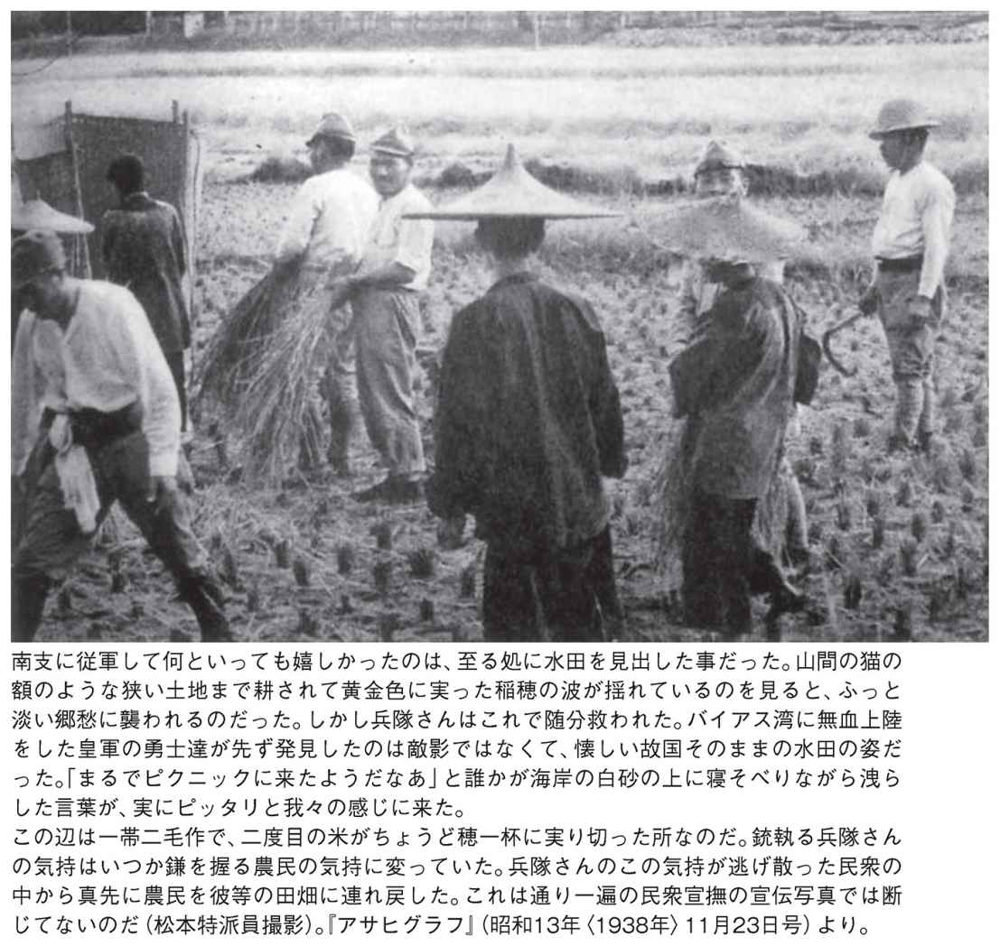
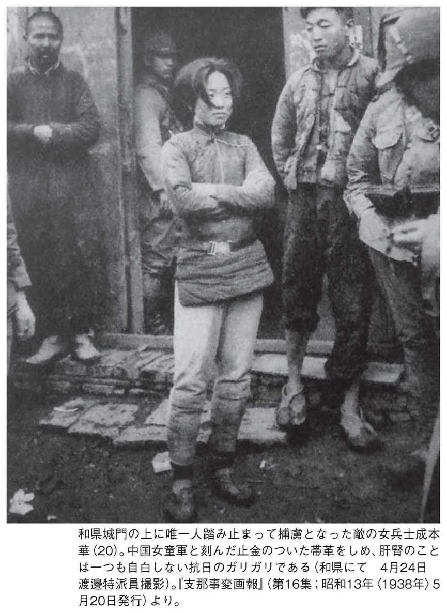
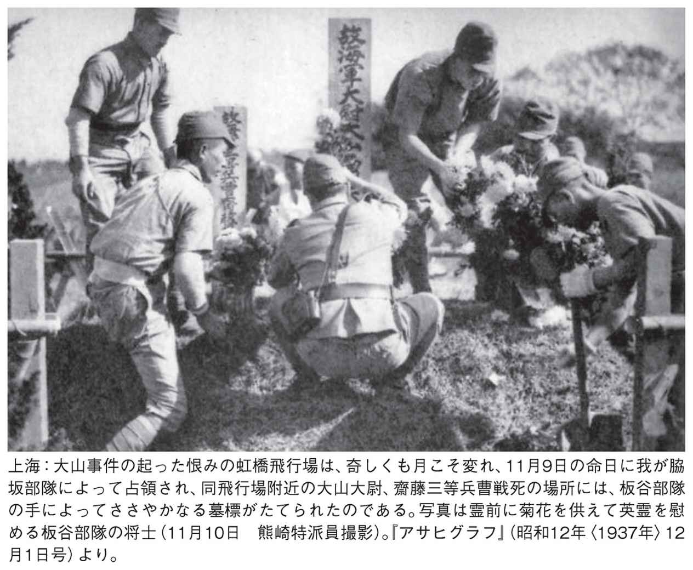
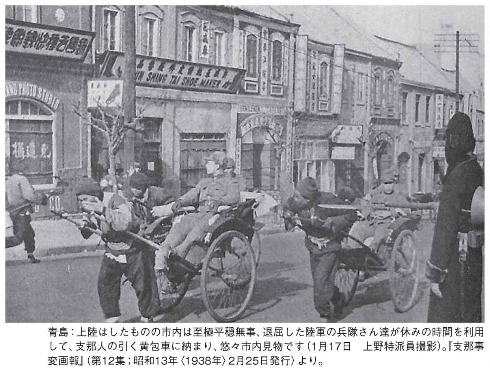

| ひと目でわかる「日中戦争」時代の武士道精神 | |
| 水間 政憲 | |
| (2017) | |

ひと目でわかる「日中戦争」時代の武士道精神
水間政憲
現在、中国政府は、日本が日清・日露戦争時から中国を侵略したなどと、北京の抗日記念館などで大々的に喧伝しています。一九一二年、中華民国臨時大統領に就任し、一九一九年に中国国民党を創設した孫文は、中国共産党からも「近代中国建国の父」として尊敬されています。
その孫文は、日露戦争を評して次の言葉を残しています。
日露戦争のとき各国の人はみな、ロシアが中国の領土を侵略することを恐れました。（中略）ロシア人はもともと、世界を併呑しようとする意気がある。それで世界各国は、なんとかして抵抗しようとした。日英同盟はすなわち、このことに抵抗するための政策であります。
日露戦争ののち日本は、ロシアを朝鮮、南満州から追い出してしまい、かくてロシアの世界戦略政策をくつがえし、東亜の領域を保全し、世界に大きな変化を生み出したのであります。（中略）
日露戦争の結果として、こんにち、アジアに強盛な日本があるので、世界の白色人種は、たんに日本を軽視しようとしないのみならず、（中略）その他のアジア人もまた国際的地位を高めうることになったのです。
※一九二四年、広州での講演「三民主義」より〈世界の名著64『孫文、毛沢東』中央公論社〉
本書は、我が国の未来を担う子供達への「日本罪悪史観予防ワクチン」の目的と、忘れ去られている武士道精神の復活を祈念して上梓しました。
現在、小・中学生が学んでいる歴史認識は、「ＧＨＱ占領下」以上の危険な洗脳が行われ、中・高の入試問題に「嘘」が公然と出題されているのが現状です。
ここまで歴史が歪められたのは、「ＧＨＱ占領下」の強力な洗脳ラジオ放送、『真相箱』の編集に加担した朝日新聞と宣伝放送したＮＨＫが中心になり、占領が解除されて主権が回復した後も、繰り返し「日本罪悪史観」を撒き散らしてきたからです。
本書を上梓するにあたって、朝日新聞社が戦前に発行していた『北支事変画報』や『日支事変画報』『支那事変写真全集』『支那事変画報』、そして『アサヒグラフ』は、創刊号からすべて調べ尽くし、数千枚の写真を収集しました。
朝日新聞が一九七五年に『アサヒグラフに見る昭和前史』や『アサヒグラフに見る昭和の世相』と、たて続けに出版した中に掲載されなかった写真に、朝日新聞社内で勃発した組合側による革命（一九六八年）以降、朝日が中国に配慮し、隠したい「日中戦争」（支那事変）の真相があると判断しました。
その中から、説明する必要のない「ひと目でわかる」写真を厳選し、一九六枚を一挙に掲載しました。
これらには、一九一九年、国際連盟（ベルサイユ講和会議）において、我が国が提出した「人種差別撤廃決議案」を否決した英国や米国などが畏れた、日本軍の「武士道精神」（義・礼・勇・仁・誠・忠・名誉）が、見事に記録されています。
覚醒されていらっしゃるインターネットユーザーの皆様が、本書に記載されている情報を国内外に拡散されたとき、無意識に刷り込まれていた人々が、「日本罪悪史観」の間違いに気づかれることを願ってやみません。
平成二十五年四月二十八日 主権回復の日に記す
近現代史研究家 水 間 政 憲
第１章 中国民衆から歓迎された武士道精神
一九三八年一月十六日の近衛内閣の声明「国民政府ヲ対手トセズ」は正鵠を射ていた
中国で介石軍や共産党軍と対峙していたのは日本軍だけではなかった
日本軍と共同で介石軍と八路軍に対抗する河南救国軍・劉昌義将軍
第２章 南京を甦らせた武士道精神
第３章 平和を取り戻した中国
本書は、戦前（一九四五年以前）の朝日新聞社が刊行した資料を使用しております。
写真のキャプション等は、原文を尊重しておりますが、旧仮名遣いは新仮名遣いに、旧字は新字に改め、また、用語等、若干の修正を行いました。なお、掲載された写真は、サイズ等調整を行いましたので、無断転載を禁じます。
装 丁：印牧真和
表紙写真： 皇軍将校からキャラメルを貰って喜ぶ支那の子供達（〈昭和12年〉11月６日）上海戦線にて濱野特派員撮影『アサヒグラフ』（昭和12年〈１９３７年〉12月１日号）
この写真を見た瞬間、これは宮城前の写真かと一瞬目を疑いました。掲載した写真は、両サイドをカットしてありますので、現物はもっと迫力があります。
当時、日本側が催した天皇誕生日の式典であったにせよ、上海市民の参加なしには見渡すかぎり日の丸の波にはならなかったでしょう。
この写真を見て、一九九〇年頃、上海出身の知人が教えてくれた言葉の意味がすべて理解できました。それは、筆者が「日本を批判している中国から、なぜ、留学してきたのか」との質問に、「お母さんは、上海に日本軍が来てから治安が回復し、夕方でも外で遊べるようになった。日本軍は信頼されていた」と語ったといい、にっこり微笑んだのです。
他の友人も「おばあちゃんは、清の時代から最低なのは共産党政権といつも言っていました」などの言葉も、すべて理解できる写真です。
実際、この写真が撮影された一九三九年当時、中国の諸都市は、日本軍と一九三八年三月二十八日に成立した維新政府や地方自治委員会などが統治する状況になっており、地方での散発的な介石軍や八路軍（共産党軍）との小規模な戦闘以外は、ゲリラによるテロを警戒する状況になっていたのです。
我が国で教えられている近現代史の大きな間違いは、「日中戦争」が勃発した一九三七年当時、中国に近代的国民国家と認められる統一国家があったように教えていることです。実際、当時の中国は、地方政府や軍閥が争う内戦状態が継続していたのです。
その実態を示す『大阪朝日新聞』（一九三三年七月三十一日付）の記事があります。その内容は、一九一五～二四年に、中国へ与えた「借款」など約一〇億円（現在の貨幣価値で三兆円相当）が、返却されなくなっていると報道していました。これは、責任をとれる統一国家がなかったことを物語っています。
我が国は、日清・日露戦争で国際的に認められていた中国との条約を、ことごとく無視されただけでなく、内政の矛盾点を反日宣伝、反日教育、日本製品排斥などで逸らし、それでも日本が隠忍自重していると、日本の居留民に、掠奪から暴行・虐殺までエスカレートする状態だったのです。
現在の日中関係においても、反日暴動や尖閣問題で、中国市民の意識を鳥インフルエンザや環境問題などの内政問題から目を逸らすやり方は、当時と酷似しています。国際法を無視する現共産党政権の体質は、一九三七年当時と変わらない一軍閥が巨大化したと理解すると、わかりやすいでしょう。
当時、その状況を憂いた、孫文の親友であった松井石根大将は、一九三六年二月、南京の介石政権と広東・広西両省を支配していた胡漢民との和解平和統一を呼びかける旅に出ていました。その旅には、『パール判事の日本無罪論』（小学館文庫）の著者である故田中正明氏も、秘書として随行していました。ちなみに、松井大将は、孫文と同様に胡漢民とも同志として交流し、介石が我が国の陸軍士官学校の予備校「振武学校」に留学してきたときには下宿の保証人にもなっていたのです。
前出の写真は、上海から遠く離れた海南島の情景ですが、治安が回復し、心から日本に信頼をよせて日の丸を掲げている様子が伝わってきます。
この頃になると、介石・国民党重慶政府と汪兆銘・国民党南京政府、それに毛沢東・延安政府との三つ巴の戦いが行われていました。
その頃の『アサヒグラフ』は、戦闘シーンの記事はめっきり減って、一九三九年暮れ頃には、「日中戦争」が終わったような長閑な誌面に戻っていました。
日本軍は、中国の内戦に引きずり込まれ、中国市民と各国居留民を守る治安維持部隊の様相を呈していたのです。
これらの事実を踏まえて読み進めると、「日中戦争」の実態が浮き彫りになるでしょう。

この写真は、日本陸軍が、日露戦争において一九〇五年三月十日、奉天（現：瀋陽）会戦で勝利し奉天城に入城した日を、戦前は「陸軍記念日」としていたことで、それを祝って上海の子供達が日の丸を振っている姿です。
十年程前に上海で、大日本帝国海軍の軍艦シリーズがプラモデル化され、ブームになっていた遠因には、上海市民に日本軍への憧れと信頼が語り継がれていた現れだったのでしょう。
一九七〇年代に中学生だった上海出身の複数の友人は、体育館に全校生徒が集められて、『神風特別攻撃隊』の映画を見せられたと語っており、日本軍へのアレルギーはないのです。教師は、その映画を「この映画には人間としての最高の愛国心がある」と、解説していたとのこと。中国共産党と友好関係にある日教組も、中国に見習って『神風特別攻撃隊』の映画を体育館に生徒を集めて上映してはいかがでしょうか。
なお、『神風特別攻撃隊』の映画は、靖国神社の遊就館で常時上映されています。
ちなみに、前出の写真も、日露戦争において大日本帝国海軍連合艦隊が、一九〇五年五月二十七日にバルチック艦隊を対馬沖で殲滅した日を「海軍記念日」としていましたので、それを祝しての旗行列です。
一九三九年（昭和十四年）頃になると、日本軍の軍紀の厳しさと「治安を回復してくれる」と、中国各地に口コミで浸透したことにより、行く先々で「日の丸」で歓迎されていたのです。
この事実が、戦後真逆になった原因は、前述した「プレス・コード」で「４．検閲制度への言及。５．米国に対する批判。６．ロシアに対する批判。７．英国に対する批判。８．朝鮮人に対する批判。９．中国に対する批判。10．他の連合国に対する批判」を禁じられたからです。
東京裁判（極東国際軍事裁判）で唯一、国際法の専門家だったパール判事は、日本無罪判決を出しましたが、後日、「日本の若い女性に」として、メッセージを寄せてくれています。
そこには、〈......宣伝に惑わされない判断力を得てください。（中略）ほとんどの大国が宣伝省を持ち、有能な人を宣伝大臣に任命していることでも、その強力さがわかります。宣伝の恐ろしさは、たえず感情に働きかけ、知らず知らずのうちに、自分の本性と矛盾することを信じ込まされる点にあります。（以下略）〉（『パール判事の日本無罪論』小学館文庫：２３６ページ所載）
実際、我が国では、社会全体が連合国側の宣伝に汚染され、現在も除染されるどころか、有名私立女子中学校の入試問題は、小学生の人格を破壊する問題が多数出題されているのです。

中国では、北清事変（義和団事件、一九〇〇年）の排外暴動で外国の財産が徹底的に掠奪破壊されたことにより、「中国軍では国家としての治安維持ができない」と、認めさせられて、「北京議定書」（条約）締結後、英国、米国、日本、ロシア、ドイツ、フランスの軍隊が中国に駐留することになりました。
その後の中国は、近代的統一国家には程遠い内乱状態に陥っていたのです。
中国で、日清戦争後に知り得た日本人の優しさを内乱に利用するために喚起されたのが、「排日侮日運動」だったのです。実際、日本軍の優しさを知った中国民衆の日本への感情は、支那事変一周年を祝って行われた前掲の盧州（七月三十一日）『支那事変画報』や（第二十二集：昭和十三年〈一九三八年〉十月一日発行）や次の南京『支那事変画報』（同上）、上海『支那事変画報』（同上）の写真を見ることで明らかでしょう。
日本が「二十一カ条要求」（一九一五年）を出したことで、「排日侮日運動」を惹起させたとする歴史認識では、これら中国民衆の親日祝賀パレードを説明できないでしょう。
８・13（支那事変）一周年記念を前にして中支に燃え上がった新支那更生運動は各地に反響を喚起しつつあるが、31日には上海、南京、蘇州、杭州、蕪湖、蚌阜、安慶、九江等の各地において「和平救国、反大会」が一斉に開催されて、五色旗の氾濫と共に打倒介石の声が、高らかにあげられ、親日の要望は支那民衆の心の奥底から盛り上がってくるのである
介石が率いる国民革命軍が、北伐の途中の一九二七年三月二十四日、南京城に入城すると、暴兵と暴民が外国領事館と居留民を襲撃し、掠奪・暴行・破壊をし始めたので、英国と米国は、揚子江に碇泊していた軍艦から南京城内へ砲撃して鎮圧しましたが、我が国は揚子江に駆逐艦が碇泊していましたが砲撃することなく、駐在武官も、「尼港事件」の再来を危惧した領事などの指示に従って隠忍自重したがために、掠奪・破壊だけでなく居留民への暴行など酸鼻を極め、日本領事夫人まで凌辱される大事件に発展しました。後日、海軍陸戦隊の責任者だった荒木大尉は、「武」を汚されたことを恥じて自決したのです。日本では、戦前「南京事件」とは、この事件のことを指していたのです。
日本側の「軟弱な対応」は、国民革命軍を増長させ「漢口事件」（一九二七年四月三日）を誘引しました。
この事件も南京のときと同じく、暴兵と暴民が漢口の日本租界を襲い、掠奪・暴行・破壊を行い、被害は一五〇戸に及びました。
この当時、日本政府が「軟弱外交」から欧米同様に毅然と、武力が必要なときは行使し、処理していたならば、「日中戦争」は違った形になっていたでしょう。
中国は今も昔も、「軟弱」な対応につけ込むことは、「菅内閣」の尖閣の対応を検証するまでもなく伝統的に行われているのです。
二〇一二年秋に中国各地で「尖閣反日暴動」が行われましたが、実態は、一九二〇年前後の「排日侮日運動」と同質の「反日」を、内政問題に利用しているのです。
中国の軍隊は、流れ者などの若者を拉致したりして組織を維持していたこともあり、日本軍の進駐によって治安が回復した感謝の祝賀パレードだったことは、これらの写真が如実に現しています。
現在、表面的には豊かになった中国ですが、その本質的な部分は、共産党一党支配を八四％の国民が否定していると人民日報系雑誌『人民論壇』ネット版のアンケート調査（二〇一三年四月十五日）で明らかになっており、この現状から目を逸らすために「尖閣」を利用しようとの目論見は、歴史が証明しているのです。
田中角栄は、歴史から学ぶことなく、「日中共同声明」（一九七二年）を出し、外交関係を再開しましたが、それに従って草木もなびくように経済界も中国へ中国へと進出したツケを、また軍隊（自衛隊）に廻す愚かな状況になる前に、中国最大の弱点「民主主義」の欠如を前面に打ち出して、「中国の嘘」を国際世論に徹底的に喚起することが、いま必要なのです。
実際、中国国内でも「猫眼看人」など、戦前の歴史を客観的に見ようと努力している民主的なサイトも出てきて、日本国内の情報が瞬時に中国国内へ伝達されるインターネット時代になっており、中国共産党にとっては日本以上にインターネット世論が脅威になっているのです。
これら一連の「反介石大会」の写真は、いかに中国民衆が介石に抑圧されていたか、一目瞭然です。
日本は「東亜新秩序」を提唱し、中国だけでなく、一九一九年に国際連盟に提出し否決された「人種差別撤廃決議案」をアジアで実現するために、孫文も提唱していた「大アジア主義」を、まず中国で実現する必要を訴え、中国民衆の共感を呼び起こしていたことが理解できる写真です。
実際、孫文の親友であった松井石根大将は、孫文が唱えていた「大アジア主義」を基調として、一九三三年（昭和八年）、参謀本部第二部長時代に「大アジア協会」を発足させていたのです。その会長には松井石根少将（当時）、発起人に公爵・近衛文麿、広田弘毅（文官で唯一人「Ａ級」戦犯として処刑された）、理事長・下中弥三郎（平凡社創業者）、常任理事兼事務局長・中谷武世など錚々たる陣容でした。
前述した介石と胡漢民との和解平和統一を求めて、一九三六年二月十一日、下関から旅に出た松井石根大将は、双方に向かって「孫文先生は『日本なくして中国なし、中国なくして日本なし。日中の関係は唇歯補佐（くちびると歯の関係）、切っても切れない関係だ』と言われた。孫文先生が唱えた『大アジア主義』の精神にたち還れ」と説得し、その具体的な方法を私案として提示していたのです。
そのときの感触は、秘書として随行していた田中正明氏（「大アジア協会」機関誌編集長兼松井会長秘書）から直接何度となく聞かされましたが、「『望みなきにあらず』と、広田首相に報告したが、その年（一九三六年十二月十二日）に勃発した中国共産党の陰謀による西安事件によって、介石は逮捕され、この和解案は水泡に帰した」と、あれがなければ、と残念がっていました。
西安事件後の第二次国共合作は、表面的には共同して日本に立ち向かったことになっていましたが、もともと水と油の関係で一枚岩にはなり得なかったのが実態だったのです。
毛沢東が、佐々木更三社会党委員長に語った「皇軍の力なしには我々が権利を奪うことは不可能だった」と、述べたことを検証する上で、これら一連の写真が撮影された年月を見ると、戦後語られてきた歴史認識の見直しが必要になります。
一九三八年一月十六日の近衛内閣の声明「国民政府ヲ対手トセズ」は正鵠を射ていた
近衛内閣声明文「帝国政府ハ爾後国民政府ヲ対手トセズ、帝国ト真ニ提携スルニ足ル新興支那政権ノ成立発展ヲ期待シ、是ト両国国交ヲ調整シテ、厚生新支那ノ建設ニ協力セントス」は、当時の中国国内の政治状況を見据えた、まさに正鵠を射た声明だったのです。
ここに掲載した一連の写真は、いずれも近衛声明から一年くらい経ってのものですので、近衛声明は、中国の動乱を先読みしていたことになります。
この声明が、「日中戦争」を泥沼化させた愚策として、中・高生の教科書などでも交渉相手を失ったと散々批判的に記載されています。
近衛声明に関して、これら写真に見る動乱を把握され、正しい判断だったと繰り返し一般的な解釈に異を唱えている近現代史研究家は、黄文雄氏だけではないでしょうか。
黄氏の中国近現代史に対する慧眼には、改めて感服させられました。
我が国の中国近現代史が、当時の中国に統一国家が存在したことを前提に研究を進めているかぎり、いつまで経っても歴史から学ぶことは不可能なのです。
前出からこれら五枚の写真をジックリ視ると、反介石大会の参加者が微妙に違うことに気づきます。
最近の中国での反日暴動のような官製と疑われるヤラセ臭さが見えません。前出の写真はソフト帽が目立ち、前出 と前出
と前出 の孝感の写真は、いかにも民衆の手造り感が伝わってきて、それぞれの地域で各階層が、反介石大会に参加していたことがよくわかります。
の孝感の写真は、いかにも民衆の手造り感が伝わってきて、それぞれの地域で各階層が、反介石大会に参加していたことがよくわかります。
前出の「打倒介石」と、壁になぐり書きの写真は、当時の政治を如実に現していて笑えます。
この写真が撮影された当時の済南は、すでに介石の影響力がなかったことを示しています。
これほど堂々と反介石が表明されている公の通りで、事もなげに商売をしていて、かりに介石の影響力がまだ残っていたら命の危険があった、と判断できる一枚です。
一枚の写真が訴えかける情報量は、百聞は一見にしかずとの格言どおり、薄っぺらな歴史認識論争を終結させる威力があります。
筆者も様々に錯綜する歴史解釈の疑問が、確信に変わった次第です。
これらも衝撃的な写真です。当時、中国民衆は、介石が中国の利益の代理人ではなく、英国の傀儡権力と見破っていたことを示す写真です。
戦後、冀東防共自治政府などは日本の傀儡政府と批判されていますが、当時の国民政府や共産党なども、英米やソ連の傀儡権力だったことを無視している研究は、公平性に欠けます。
当時の中国で中国民衆から英国が嫌われていたことを示す写真は、ほとんど見たことがなかったのですが、この写真を見て、英国がＧＨＱ占領下に、米国より強力な嫌がらせを日本にしていたことがわかります。英国を象徴していた戦艦プリンス・オブ・ウェールズを、日本軍機がマレー沖海戦（一九四一年十二月十日）で撃沈した恨みだけでなく、日本の勢力下の中国で、侵略者と糾弾されていたことの恨みもあったと理解できました。
それは、高桑幸吉氏が著した『マッカーサーの新聞検閲 掲載禁止・削除になった新聞記事』に記載されていた、英国が日本に対して「包丁・鍋釜以外つくらせるな」との記事がボツになっていたことからもうかがえます。ＧＨＱの真意はどうあれ、後世に残ると、後々なにかと問題になると判断して、削除したのでしょうが、飛行機どころかあまりにも刺激的だったので記憶していたのです。実際、主権回復後も長い間、飛行機を製造できなかったことで、それは英米の本音だったと解釈できます。
中国で中学生時代に文化大革命の「下放政策」の洗礼を受けた友人が、「中学生のとき、中国で一番悪いことをしたのはイギリスと教わりました。日本は二番目です」と笑わせてくれ、南京問題でも、「警察官の証言に万単位の一桁まで死体を確認したと証言した者がいるが」と聞くと、「中国では死人が生き返ることもあります」と返答し、「中学生のとき先生に連れられて見たイギリスの侵略記念館には、イギリス人が中国の子供を殺して石鹸にした展示を見ましたよ」と驚くべきことも、普通に語っていました。
そこで、後出の写真を見るとわかりやすいでしょう。
これは、天津でのロシア義勇軍の反英国デモを撮影したものですが、戦後の中国共産党の教育と一貫性があり、歴史の証言として、写真は多くを語りかけています。
戦前、日本軍が中国で悪のかぎりをし尽くしたと教わっている日本の小・中・高生は、これら一連の写真を見たら、文科省だけでなく、国家への不信感も増幅することになりますので、早急に「近隣諸国条項」を破棄し、「社会科教科書」には、歴史認識論争になっている「歴史」に関しては、記載しないことを閣議決定する必要があります。
右上の写真は、上海での反英のビラが反英デモ目掛けて上から撒かれている不思議な写真ですが、阿片戦争以来の鬱積した中国民衆の思いが、街中にみなぎっているように見える一枚です。
右下の写真は、街でよく見かける広告宣伝カーを彷彿とさせます。反英国の垂れ幕に大スピーカーを屋根に二つ載せ、大音響で市中を走り回っていたとなると、まだ英国居留民が上海にも天津にもたくさんいた時期ですので、日本への恨みが増幅されたことは想像できます。
これらの写真は、「全支に反英の嵐」の特集写真の一部ですが、他に「『との関係を断絶し、東亜復興の道を歩まん』汪兆銘の歴史的大演説に聴き入る民衆。彼等こそ一番切実に、この演説の実現の日を待ち焦がれるものであろう」（一九三九年七月九日 上海にて）との、街頭ラジオに聴き入っている民衆の姿を撮影している写真も掲載されています。
当時、一般大衆に影響力のあった最大のメディアはラジオであり、ラジオ放送を掌握していた者が、ほぼ中国を掌握していたと解釈できます。
我が国の教科書では、日本軍が中国で「極悪非道」な振る舞いをしていたことになっています。
最近の「教育改革案」では、英語を小学生から教育することで国際化に対応できるとの意見が大勢になっていますが、実際、「嘘で汚染」され、自国に誇りを持てない教育を改善することのほうが、より緊急性があるのです。
本項から次項「日本社会が戦後激変した訳」までの写真を見るだけでも、教科書に記載されている「悪魔」のような日本軍は雲散霧消します。
日本軍は、行く先々で中国民衆から信頼されていたことが一目瞭然になります。
現代の日本人と戦前の日本人を断絶させる教育は、世代間抗争を策して、日本を弱体化させようとした「ＧＨＱ占領下の洗脳政策」だったのです。それを主権回復後は、社会主義革命を「夢想」していた組織が引き継いで、現在に至っているのです。
日本軍は、南京など中国のすべての占領地で、突然「悪魔」になった訳でもなく、優しく子供達と交流し、農家で野良仕事を手伝ったり「武士道精神」を発揮していたのです。
あえて言えば、教科書に根拠のない「嘘」を執筆している大学教授や、小・中・高生に「嘘」を平気で教えている戦後の教師が「極悪非道」な人間なのです。
日本社会で、家族が断絶していない家庭に育った者は、歴史教科書に記載されている「嘘」を見抜ける環境がありますが、これから先はそれも難しくなるでしょう。

マッカーサーが日本に進駐してきて、最初に行ったことは日本の情報空間を奪うことでした。「三〇項目のプレス・コード」を発令し、同盟通信は解体されました。
日本が一番変質した原因は、良質な旧制中学校の校長など、指導者層を公職から追放したことです。一九四六年三月十日には、「軍国主義指導者の追放指令」と称し、同じ敗戦国のドイツでは実施されなかったＧ項で「ジャーナリスト・文化人」など一九万人が追放されたのです。この指令が欺瞞に満ちたものだったのは、対象指導者の三親等まで追放されたことで、良質な日本人が一〇〇万人以上が指導層から消された、日本の歴史上初めての出来事だったのです。
当時、「泣く子もだまるＧＨＱ」とは、公職追放を指しての言葉だったのです（『公職追放論』増田弘著）。
マッカーサー（連合国軍最高総司令部）は、日本を弱体化させる目的のために、米国の「自由と民主主義」と相容れない社会主義者を、公職追放した人物と差し換えたのです。
そして、日本人の精神的支柱（武士道精神）である伝統・文化全般の破壊工作として「日本人同士を敵対させる」巧妙な政策を実行したのです。
その目的を達成するために、一九四五年（昭和二十年）十一月二十一日夜に、「天皇制について」と称した番組を放送しました。当時、新聞においてさえ憚られていた「天皇制」に関する座談会だったのです。ゲストは、同年十月十日に府中刑務所から釈放されたばかりの、日本共産党を創立した指導者の徳田球一だったのです。
写真は広東のテロの現場を撮影したものですが、記事は「焦土抗戦の名のもとに、水道を、電気を、市内の公共機関をほとんどすべて敗敵の手によって破壊されてしまった広東の街。この暗黒の街、広東にも、新しい支那誕生の芽は萌える。十二月四日『広州市婦女維持会』という女ばかりの治安維持会が結成され、広東自衛団が成立して、広東治安の確保に活発な活動を始めた」とあり、それら女性団体が抗日運動の総本山・中山記念堂から市内へ向けて、デモ行進の写真も掲載されています。
そのデモの横断幕には、広東市民に迷惑をかけている介石を批判した「打倒自私自利的政府」を掲げて、デモ行進をするチャイナ服を着た女性の写真も掲載されています。
この頃の都市部は、すでに戦闘行為はなく、写真に写っているように、ゲリラ行為を鎮静化する仕事が日本軍の役割になっていたのです。
中国市民も客観的に判断できるようになって、介石軍が私利私欲の存在だったことに気づいた結果が、横断幕に表現されていたのです。
実際、介石にとって地元のような広東で批判される状況は、本人も想定外のことだったでしょう。

極端な言い方をすると、この写真一枚で日本軍の優しさがわかります。
捕虜になった女性のふてぶてしい態度が、中国では日本軍の優しさが浸透していたことを物語っています。
女性捕虜は、腕組みをして、かつ堂々としていて、どちらが捕虜かわかりませんね。
これが逆だったら、即刻惨殺されていたでしょうが、この写真は、一九三八年四月の中国の地方ですので、この時点で日本軍の軍紀の厳しさや優しさは、中国全土に轟き、安心して捕虜になっていたことを窺い知ることができます。
現在、中国全土でサービス業を展開し成功している日本の企業は、自社の営業戦略がすぐれているなどと慢心せず、日本軍が中国全土で信頼され、残してきた財産で商売をさせてもらっていることを理解し、靖国の杜に祀られている英霊に感謝の誠を捧げていただきたいものです。
写真は、捕虜を解放する式典で日本軍将校が訓辞を述べているところです。
前出は、北京の俘虜収容所に収監されていた山西、四川、中央各軍の俘虜二〇〇名に対する自力更生の画期的試みで、一日五五銭の日給を支給していたと記載されています。
そして更生した俘虜から順次、この写真のような解放式を経て、それぞれの地域へ解放していたのです。日本が戦後、貿易立国として短期間に復活できた根源には、一連の写真に見る規律正しい「武士道精神」を具現化していた祖父や曾祖父たちがいたからなのです。
このような武士道精神が、我が国から衰退し始めたときから日本がおかしくなったことに、いま気づくときなのです。現在、日本軍に所属した人物で、武士道精神を体現されている方の代表に、台湾元総統の李登輝氏がおられます。
ご本人の『「武士道」解題』（李登輝著、小学館）で、「日本人が忘れかけている高い精神性を取り戻そう」と、世界最高峰の武士道精神の復活を呼びかけておられます。
中国で介石軍や共産党軍と対峙していたのは日本軍だけではなかった

詳細は後述しますが、一九三七年十二月十三日に南京が陥落すると、翌日十四日には中華民国臨時政府が成立していました。
右の写真は、『支那事変画報』（第15集）に掲載されており、発行日が一九三八年五月五日ですので、南京陥落から半年内に「北京自衛団」が組織化されたことがわかります。
他の写真には、軍楽隊が行進曲を奏したり、団員の整列訓練、命令一下、団杖を引っさげて、猛然たる突撃の演習の模様が掲載されています。
このような地方政府自衛団は、各地に発足していましたが、日本軍とは友好関係だったことで、当時の中国が群雄割拠、軍閥と地方政府が乱立していた状況が理解できるでしょう。
これらの状況を検証すると、現在使用されている教科書は、「日中戦争勃発当時、中国は近代的国民国家ではありませんでした」と書き換える必要が出てくることになるでしょう。
右上の写真は見てのとおり、山西南部地域で維新政府と共同戦線をはっていたことがわかる一枚です。
他の写真は、戦国時代の武将を彷彿させる騎馬隊が、砂埃を巻き上げて原野を走っている勇壮な姿のものです。
右下の写真は、前出と同じ「北京自衛団」のものです。
日本軍と共同で介石軍と八路軍に対抗する河南救国軍・劉昌義将軍
記事には「劉昌義将軍は、抗日の大愚を深く悟り、大陸建設の熱血漢真野恒由氏（大阪市出身）と語らい、反国共の大旗を河南戦野にし、保安隊を組織、四千の兵を養いつつ皇軍に協力、討の陣営を固めたのであった。......」とあり、突撃シーンとか戦車と一緒に突撃している写真を見て思うことは、介石軍や八路軍より訓練が行き届いていると感じたことです。
このような中国の地方軍が協力してくれたことで、中国戦線、華南など南地域では、まったく負けなかったと聞いていたことがよくわかります。
おかしな話ですが、終戦になったとき日本軍が武装解除しようにも、なかなか引き継ぐ場所がなく、日本側の撤退の都合にあわせて場所を決めていたと聞いたことがよくわかりました。
チベット発祥のラマ教は、インド仏教直系の仏教であり、我が国とも関係が深く、大東亜戦争の開戦前、経済封鎖によって困窮していた我が国に「同じ仏教国が苦しい思いをしているから」と、チベット政府は「大量の羊毛」を拠出してくれていたのです。ちなみにチベットは、一九一一年の「辛亥革命」後の一九一三年に独立宣言をしていました。
また開戦後、日本が英米の援ルート（ビルマ経由の武器・弾薬の中国への支援）を壊滅させると、米国はチベットに大統領特使を派遣して、ダライ・ラマ十三世にヒマラヤ越えの「チベット・ルート」を強硬に要求しましたが、ダライ・ラマ十三世は中立を貫き、応じなかったのです。
一九四五年八月十五日、我が国が敗戦したために、日本と外交関係を継続していたチベットは、連合国側から「敗戦国扱い」されることになったのです。
現在、中国がチベットで行っている悲劇は、ナチスのホロコーストに比肩する暴虐ですが、責任の一端は中国に肩入れしていた連合国（欧米）にもあるのです。また日本は、チベットに対し、決して忘れてはいけない恩義があるのです。
介石国民党政権時代、回教徒は、あらゆる民族的迫害を受け、学校まで閉鎖されていました。
親日政権誕生後、我が国も支援できるようになり、民族的迫害もなくなり、宗教の自由も保障されるようになりました。
写真は、張家口における回教徒の学校が開校されることになった、その式典の模様です。
この写真の旗は、筆者も、多数半月旗がっているのを、北京オリンピックの聖火リレーが長野県松本市で行われたとき、五星紅旗の嵐の中に中央アジアの草原を連想させる「半月旗」に、爽快感を感じたことを思い出しました。
実際、松本市で行われた聖火リレーは、中国の軍事訓練が行われていたと言っても過言でないくらい、五星紅旗の群衆は統制されていました。
畳六枚くらいの五星紅旗で歩道の視界を塞ぎ、日本の警察官が目の前で、旗竿で殴られたり膝で蹴られたりしている姿を目撃し、中国国内の暴動の一端を垣間見た気分になりました。
聖火リレーのゴール地点では、五星紅旗の群衆と「半月旗」（東トルキスタン旗）の人々を、日本の警察が分けていたのが印象に残っています。
靖国神社に軍馬と軍犬が、遊就館の前に立派な台座に載せられ、祀られていることは知っていましたが、今回の資料調査の過程で、軍馬と軍犬が様々な場面で活躍していた実態を知り感動しました。
軍馬と軍犬は、昼夜をとわず、ともに戦った戦友だったのです。
実際、渡河作戦で、背中に大量の荷物を載せ、疲れ果てて岸に上がれなくなった軍馬を、兵士が七人がかりで必死に助けている姿に胸が熱くなりました。
次の軍馬の写真は掲載できませんでしたが、キャプションは「自分の戦死は覚悟のうえだ。軍馬に万一のことがあってはという優しい心やりから、国元から送られた千人針を愛馬の首にまきつけた藍原多助のような兵隊さんが居ることがわかる（九月二十四日北支にて）」と、記載されていました。
軍犬の首輪には、「伝令ポケット」が着いており、兵士が伝令書を入れ、今まさに戦場へ出発寸前の写真もありました。
前の上・下の写真のように、雨の日も雪の日も人馬一体となって進軍している写真は、多数掲載されています。戦場で延々と進軍する人馬に、新聞記者も胸をうたれてシャッターを押した気持ちは、すべての写真からひしひしと伝わってきます。
戦後、我が国の戦争責任を声高に訴える中国や韓国は、日常的に犬を食する伝統があり、戦死した軍犬に弔意を捧げることなど考えられないことでしょう。
後出の地図で済寧を見ると、そんなに南ではありませんが、五月でも地面の影を見ると、かなり強い日差しだったことがわかります。
中国共産党政府建国の母と慕われている周恩来・元首相は、我が国に留学中の一九一八年五月一日の日記に、「靖国神社春の大祭を拝観して大感激した」と綴っていました。
この日記の存在は、筆者が二〇〇五年九月号の月刊誌『正論』に発表し、その後、国際的に有名な香港の月刊誌『開放』（二〇〇七年十一月号）に全文転載され、中華世界では話題になっていました。この雑誌は、江沢民主席時代、中国各省長に読ませて、毎月党中央に感想文を提出させていたことで、日清戦争後から日本は中国を侵略したとの批判も、これでできなくなったと安堵したのですが、二〇一三年四月十日の衆議院予算委員会で、中山成彬衆議院議員が、「周恩来元首相も参拝した靖国神社春の大祭に安倍首相も安心して参拝してください」と採り上げてくれるまで、国内では保守も左翼も同日記に関して沈黙していたのです。
戦後、「日中戦争」（支那事変）の起点は一九三七年七月七日の廬溝橋事件に置かれていますが、これは中国に都合のいい政治的な罠なのです。それは、どちらが先に発砲したかを歴史論争に持ち込めるからなのです。
日本軍は、廬溝橋事件後に、現地で和平協定（同七月十一日）を結んでおり、武力紛争を望んでいなかったのです。
中国は、日本軍を内戦に利用するため、その後も「郎坊事件」（同七月二十五日）、「広安門事件」（同七月二十六日）と挑発は継続していました。
実際、戦後の中国に残留し、中国共産党軍の将校になっていた葛西純一氏は、中国人民解放軍総政治部発行の『戦士政治課本』に、「七・七事変（廬溝橋事件）は、劉少奇同志の指導する抗日救国学生の一隊が決死的行動を以って党中央の指令を実行したもので、（中略）介石南京反動政府は、世界有数の精強を誇る日本陸軍と戦わざるを得なくなった。その結果、滅亡したのは、中国共産党ではなく介石南京反動政府と日本帝国主義であった」（『新資料廬溝橋事件』成祥出版社）と、記載されていたことを明らかにしたのです。
これは、毛沢東が佐々木更三社会党委員長に述べた、感謝の言葉と符合しています。
大山大尉と齋藤兵曹が惨殺されても海軍は「慎重方針堅持」だった

中国による挑発の繰り返しに、日本国内は騒然となっており、中国側がコップに水を一滴垂らすだけで、日本政府は「戦争」を決断せざるを得ない状況になっていました。
介石は、英米の莫大な支援を受けていたこともあり、一九三七年七月九日、各省の幹部を前に「（日本と）戦うつもりである」と宣言していました。実際、開戦の火蓋を切ったのは中国の次の挑発が原因だったのです。
それは、第一次上海事変（一九三二年）のときに取り決めた「上海停戦協定」に違反し、中国が一方的に上海で戦闘を開始したことに対して、日本側は戦時国際法に則って応戦したのです。
これらの状況は、当時の中国人には、公知の事実だったのです。それゆえ、南京陥落の二日後には、陥落を祝う中国人の旗行列が行われていたのです（後述する「南京陥落の二日後には祝意の旗行列が行われていた」～「南京陥落の慶祝行列に北京も天津も人、人、人の波」の項の写真参照）。
この写真は、○○入城となっていますが、記者は北支戦線を取材となっているので、北支の「７０６高地」占領後の○○入城なのがわかります。この時期は、戦端を切って間近だったこともあり、戦闘は激烈だったことが記事から伝わってきます。
記事の一部を抜粋すると「静岡県富士郡出身の小川部隊長と長尾部隊長は、戦場に到着後、敵陣に真っ先に突撃、獅子奮迅華々しい戦死を遂げたもので、後世まで戦史のページを飾ることであろう」となっています。
実は、この写真は、他の地域の中国住民が日本軍を歓迎する場面のものとは違い、一瞬、日の丸が弔意を表す半旗のように撮影されていたことで目にとまり、記事を読んで納得できました。
中国住民も弔意を表しているように見えたのは、そのためだったのでしょう。
当然、従軍記者も弔意を表すためにシャッターを切ったことが、充分伝わってくる一枚です。
日本が一九三七年八月十七日に、「不拡大方針からの転換」を閣議決定した主な理由は、邦人虐殺までエスカレートし、上海への無差別爆撃など、中国側の目に余る暴挙に対して、「暴支膺懲」（中国の悪者を討ちこらしめる）にあったので、民衆（良民）にはすこぶる優しかったのです。
それゆえ、上海から南京攻略戦の総司令官に任命された松井石根大将は、着任早々、次の訓令を出していたのです。それは、「上海附近の戦闘は専ら我に挑戦する敵軍戡定を旨とし、所在の支那官民に対しては努めて之を宣撫愛護するべきこと」（＊戡定＝敵を討って乱を鎮めること）だったのです。
松井大将の訓令は、それ以後も徹底を極め、南京城攻略前には、戦時国際法を遵守するために、日本から同行を求めた国際法学者・斎藤良衛博士を招き、助言を受けて、微細な『南京城攻略要領』を発令していたのです。
実際、南京城攻略戦は、それら訓令のとおりに実施されましたが、それらの訓令は、東京裁判では一切証拠採用されなかったのです。
ここまでで、当時の日本人が現代人より慈悲深かったことは、充分理解していただけたと思っております。
当時の中国民衆は、反日教育を実施されている現在の中国人より、親日的だったことも明らかになったことでしょう。
昨年、中国国内で制作されたテレビドラマ二〇〇本のうち、日本軍兵士が出てくる「抗日ドラマ」が七〇本を占めるまでになっています。
連日ゴールデンタイムに「バカヤロー」などと、連呼する粗暴な「日本軍兵士」のオンパレードになっているのです。
日本語を少し話せる中国人俳優は、日本軍兵士役として重宝がられ、撮影所を掛け持ちして、一日に十数回、殺され役を演じている者もいるのです。
尖閣海域では、中国軍艦が自衛隊艦船に、国際法的には戦闘行為と解釈されるレーダー照射（ロックオン）をするような、一触即発の緊迫した状況になっています。
今、日本人は覚悟が問われています。それは、戦争を回避するために、武力衝突の詳細な戦闘要領を作成し、いつでも実行可能な準備をしておく必要があるのです。
前述した松井大将が発令した「南京城攻略要領」は、現在でも参考になることでしょう。
当時、日本陸軍を代表する自他共に認める親中国の将軍だった松井大将が発令した「南京城攻略要領」を知ることで、「南京大虐殺」などは、中国の都市伝説だと一瞬で理解していただけます。
【南京城攻略要領】
一～五項は日中間の論争になっている部分と関係ないので省略しました。
六．南京入城後の処置
（一）「各兵団に地域を指定して警備に任せしめ主力は城外適宜の地点に集結す（本書後出、後出参照）」
（二）「入城式、合同慰霊祭（後述の「日中共同慰霊大法会」～「同時期にユダヤ人にも発揮された武士道精神」の項参照）、防空部隊の推進、南京警備部隊の配備等の件（略）」
七．南京城の攻略及入城に関する注意事項
（一）「皇軍が外国の首都に入城するは有史以来の盛事にして永く竹帛に垂るべき事績たると、世界の斉しく注目しある大事件なるに鑑み、正々堂々将来の模範たるべき心組を以て各部隊の乱入、友軍相撃、不法行為等絶対に無からしむるを要す」
（二）「部隊の軍紀風紀を特に厳粛にし、支那軍民をして皇軍の威武に敬仰帰服せしめ、苟も名誉を毀損するが如き行為の絶無を期すを要す」
（三）「別に示す要因に基づき、外国権益特に外交機関には絶対に接近せざるは固より、外交団が設定を提議し、我軍に拒否せられたる中立地帯には必要の外立入を禁じ所要の地点に歩哨を配置す、又城外に於ける中山陵其他革命の志士の墓及明孝陵には、立入ることを禁ず」
（四）「入城部隊は、師団長が特に選抜せるものにして、予め注意事項特に城内外国権益の位置等を徹底せしめ、絶対に過誤なきを期し、要すれば歩哨を配置す」
（五）「略奪行為をなし又不注意と雖も火を失するものは厳罰に処す、軍隊と同時に多数の憲兵、補助憲兵を入城せしめ、不法行為を摘発せしむ」
以上
松井大将は、明孝陵や中山陵などの史跡、諸外国の大使館や権益、その他いわゆる「安全区」などに赤丸をつけ、絶対破壊してはならないと、各部隊に地図を渡して厳命していたことを、当時の南京日本大使館参事官・日高六郎氏が一九四七年十一月六日、東京裁判で証言しています。
また、中沢三夫第16師団参謀長は「松井大将の示された中山陵、明孝陵を毀損せず占領するため、師団はすくなからず犠牲を払ったのであります。（中略）わが軍の砲兵の射撃はもちろん、歩兵の重火器の使用をも差し控えの不利を忍び、（中略）多数のかつまた無益の損害を蒙るの余儀なきに至りました。しかしこれがために、中山陵、明孝陵は完全に保護せられ、苦境にかかわらず紫金山を無傷で占領した同聯隊は、戦闘後、松井軍司令官から感謝状を授与されました」と、東京裁判宣誓公供書の中に記載されています。
第二次アヘン戦争（一八五六～一八六〇年）のとき、英仏連合軍が北京に進撃し、西太后が贅のかぎりを尽くしてつくった「円明園」を跡形もなく破壊・略奪した暴挙に比して、現在、中国政府高官はいかに考えているのか、機会があったらお聞きしたいものです。
前記の「南京城攻略要領」の内容どおり、南京城攻略は実施されていたのです。「投降勧告文」等、新聞資料は『ひと目でわかる日韓・日中歴史の真実』（ＰＨＰ研究所）の「南京問題：動かぬ証拠」の章に掲載してありますので、ご参照ください。
この写真は、アイリス・チャンが、「日本軍が女性や子供を狩り集めて売り飛ばした」と、キャプションをつけていた有名な写真です。
これら三枚の写真は、『アサヒグラフ』に「硝煙下の桃源郷・江南の『日の丸部落』」との特集ページに掲載されていたものです。実際は、村から上の畑への送り迎えを日本軍が護衛していた微笑ましい途中の写真だったのです。ちなみに、大虐殺派に都合の悪い右の上・下の写真は、これまで公になっていませんでした。
二〇〇六年九月二十四日、南京市の「南京大虐殺記念館」から、「南京大虐殺」の普及に貢献したとのことで、表彰された本多勝一・元朝日新聞記者は、自著『中国の日本軍』の第４部「南京大虐殺」の中で「婦女子を狩り集めて連れて行く日本兵たち。強姦や輪姦は七、八歳の幼女から、七十歳を越えた老女にまで及んだ」と、捏造キャプションをつけ、通州の虐殺写真と思われるものを掲載していました。
※ちなみに「南京大虐殺派」の虐殺の証拠と称する写真は、すべて「誰が、いつ、どこで」撮影したかの表示がない無価値のものばかりです。
この写真は、大同市内のスナップですが、当時、北支では共産主義の危険性を市民も認識していたことを示しています。
民主化されていない中国では、「暴民」と「紳士」が喧嘩して常に暴民が勝利し、暴力で民衆を抑圧してきた歴史が「四千年」続いていると自慢しています。
中国は、現在も政治的（歴史）発言の自由を一切与えていません。当然、「通信の秘密」の保障もなく、インターネットも検閲されています。
「暴民」も権力者になると、家族ぐるみで莫大な蓄財をします。
二〇一二年十月二十五日、『ニューヨーク・タイムズ（電子版）』は、温家宝（当時：首相）の一族が「二七億ドル（当時：約二二〇〇億円）を蓄財した」と報道しました。
共産党幹部は皇帝のようなお金持ちになると、「紳士」的な振る舞いを始め、子息をハーバード大学など海外に留学させ、いつでも国外逃亡できるように準備しています。
それは、時間が経過して、自分達が「紳士」の立場になっていることを自覚しているからです。

今上陛下の御成婚記念日の二〇一三年（平成二十五年）四月十日、衆議院予算委員会において、西川京子衆議院議員は、「......この写真を御覧になってください。日本軍が一九三七年十二月十三日、南京に入った時の写真です。（中略）この当日、この時に大虐殺が行われていた、この地でという、まったく死体も何もない、そういう中で整然と日本軍が入っていった現実がしっかりと出ています。（中略）この南京の問題は、一九八〇年代、朝日新聞が大キャンペーンを張った中で、大きな政治問題として中国・韓国がこれを利用するようになった。これが実態です。（中略）南京問題は通常の戦闘行為以上でも以下でもなかったという結論、が実に正しいことだと、私たちはそういう結論を得ています」と。南京問題は、朝日新聞の大キャンペーンが巻き起こしたことをＮＨＫが全国放送している中で断言しましたが、朝日新聞を中心とした反日メディアと中国は沈黙しています。
これで長い間、善良な日本人を苦しめてきた南京問題は、終わったのです。
二〇〇七年二月、自民党「日本の前途と歴史教育を考える議員の会」（歴史議連）の南京問題を検証する委員会に、阿羅健一氏とオブザーバーとして筆者も参加して、中山成彬会長、西川京子事務局長、戸井田徹小委員長とともに徹底的に検証しました。
前出の写真は、その時に発掘できませんでしたが、昨年からの資料調査の過程で発掘し、本書に掲載した大量のスクープ写真資料の中の一枚でした。
今回、西川京子先生のパネル資料に使っていただけたのは、いっしょに検証作業をしてきたことでの見識から、一番決定的な写真を選択していただけたのです。
南京問題は、過去の資料の優劣を判断できるか否かの見識がなければ、いつまで経っても終結させることはできません。
実際、西川先生が衆議院予算委員会で、「歴史議連」の検証結果を踏まえて、「この問題は完全に決着がついている」と、宣言していただけたことは、戦後の歴史認識を大転換させる歴史的な発言として、国会史に刻まれることになるでしょう。
本書は、様々な「南京関連本」を読破されていても、すっきり確信をもって「南京大虐殺」は、中国と戦後の朝日新聞の合作だと、結論づけられない方々の残滓を、綺麗さっぱり消す手助けをできるようにまとめてあります。
南京だけに絞った研究も必要ですが、それは中国の情報戦の手に乗せられる危険性を伴っていました。それは、出処を明らかにできない写真をいくら検証しても、意味のないことだからです。
そこで今回は、中国や朝日新聞が反論できない大量のスクープ写真資料を元に、「日中戦争」の全体像から、「南京問題」を完全に終結させるために上梓しました。
この写真は、戦後の歴史認識の間違いを明らかにできるものです。
実際、南京陥落の翌日に、北京で新政権が誕生したことに触れている資料はあっても、一連の写真を見ると、民衆の圧倒的な支持に支えられていたことがわかります。
そうなると、中国を代表する政権は、闇の中に見えなくなってしまいます。
前出の写真は、筆者が二〇〇三年に発掘して『朝日が明かす中国の嘘』に掲載したものですが、当時は新聞記事からの転写だったので、表情までよくわかりませんでした。しかし、この写真は『アサヒグラフ』に掲載されていたものですので、避難民の表情もよくわかります。いっさい怖がっていないのは、悪い連中を日本軍が追い出してくれたことを知って出てきたと見ることができます。
これから南京の写真に基づいて解説しますが、介石軍は、南京の住民から信頼されていなかったとなると、写真を見る視点ががらっと変わります。
この写真には、空高く浮かんでいるアドバルーンも写っていましたが、紙幅の関係でカットしてあります。アドバルーンは、前出のものとよく似ています。
これらの写真で、北京、天津など中国の大都市では、南京陥落の一報に市民が歓喜していたことがよくわかります。
また、日本軍の活躍を期待していたのは、中国沿岸部の大都市の住民たちだったことで、戦後、現在まで中国共産党の言論弾圧が、沿岸部諸都市で厳しく規制している理由もわかります。
それは、日本軍の実態を知っていた沿岸部住民に、強力な言論統制をかける必要に迫られてのものだったのです。
中国の「日中戦争史」を、嘘を嘘で二重三重に上塗りして、維持してきた政権だったからです。
それに加担してきたのは、当時、日本と対立関係にあった欧米の通信社と有力新聞社です。それらのメディアは、自国の都合の悪い歴史的事実を封印しているのです。
実際、「日中戦争」の資料に、八路軍（共産党軍）の姿形がほとんど見られないのです。たまに八路軍関係で出ていたのは、山深い奥地へ追撃する○○部隊との、「絵」になる人馬一体で進軍している写真くらいでした。
都市部では、共産党軍の姿形などまったくなかったのです。
最近、中国では、共産党軍が日本軍と戦って勝利し、中国から追い出したなどと教えているようですが、姿形のない軍隊と戦える訳などありません。
本書に掲載した写真は、戦後、日中両国民には、信じがたい事実が記録されています。そこには、「洗脳教育」の恐ろしさを一瞬で理解できる事実が記録されています。
南京陥落を祝う提灯行列は、東京で行われていたことは朝日新聞も報道しましたが、規模も参加人数も桁違いだったのが、北京で行われた「南京陥落」を待って設立した新政府を祝う旗行列でした。
これらの写真は、南京陥落の二日後に五万人が新政府に賛同していた情景です。「日中戦争」とは何だったのか、根本的な見直しを迫る写真です。
戦時の政治宣伝の「南京虐殺問題」は、中国発でしたが、戦後は朝日新聞発だったのです。ところが「南京虐殺」の宣伝は、「中日外交」の道具になるとのヒントを中国へ与えたのは、大森実など戦後のジャーナリズムをリードした大物たちの南京視察（一九六六年）だったのです。
阿羅健一氏の著書『南京で本当は何が起こったのか』のなかに、中国の旅行社の支配人が、「我々はあの思い出を忘れ、将来の中日友好を語りたい」と、南京問題に興味を示さなかった。それに大森が食い下がっても、中国側は「過去はもういいじゃありませんか」と拒否すると、まだ大森が執拗に食い下がったため「それほどご希望なら、明日、資料を付けてちゃんと説明しましょう」となり、「大虐殺の話を蒸し返す気はないが、とくにあなた方の注文なので真相を話すことにしました」と、中国に外交の道具として「使える」と気付かせた原点がここにあったのです。
ここで許せないのは、大森に同行していたなかに、あの大宅壮一もいたことです。大宅は、南京城陥落の二日前に南京に現れ、毎日新聞の佐藤振寿カメラマンと一緒に入城していたのです。大宅はすべてを知っていたのにもかかわらず沈黙したということは、その時点で「南京大虐殺」に同意したことです。
大宅が南京にいた証拠は、『ひと目でわかる日韓・日中歴史の真実』の51ページの写真を見てください。
飛ぶ鳥を落とす勢いだった日本を代表するジャーナリストたちが「南京大虐殺」に同意したような行動をとったことは、三流ジャーナリストとの謗りを免れないでしょう。
これらのやり取りは、朝日新聞が「中国の旅」（一九七一年）の大キャンペーンを始める五年前の出来事だったのです。

この写真を見た西川京子衆議院議員は、唖然としていました。国会の予算委員会で「一九八〇年代の朝日新聞の大キャンペーン」が、南京問題をつくり出したと、毅然と宣言したのには、西川京子議員の出身大学の洞富雄早稲田大学教授も深く関わっていたからなのです。
少しでも歴史に興味がある者には、西川京子議員が衆議院予算委員会のパネルに掲載した「中山門」が陥落して、これから掃討のための兵隊が隊列をなして進行しているものと、南京が陥落してできた新政府慶祝旗行列が、数万人規模で行われていたことを証明できる、これらの写真を確認することが必須になるでしょう。
これらの写真を知らずして、これから中国の近現代史は語れないのです。
今回発掘した南京陥落当時の写真資料を、皆様方の常識で判断していただければ、「南京大虐殺」は完全に虚構だとわかります。
まず、中国は長い歴史を自慢していますが、一度も民主化された事実はありません。現在の歴史検証の実態は、「愛国無罪」が、すべてに優先していることです。
それゆえ、歴史的に動かぬ証拠を提示されても、無視することが「国是」になっています。
それは、「尖閣問題」も「南京大虐殺問題」と同じです。
これから我々日本人がとるべき態度は、国際的に第一級資料として通用する証拠を皆様方が個々に確認して、中国の嘘を判断することです。
本書は、発売と同時に電子版にもなりますので、世界中で検証可能になることを考慮して、西暦も使用しています。
ここから本格的に「南京問題」を検証するにあたって、基本的に押さえる必要があることは、一九三七年十二月十三日から一九三八年二月十二日までの二カ月間に、中国政府の公式見解は「南京城内で民間人を『三〇万人大虐殺』」したと、なっていることです。その中でも陥落から二カ月間が大事ですので、前出の写真と「貴方の常識で判断できる『南京大虐殺』の虚構」から「南京の白衣の天使」に項に掲載した南京城内の写真をじっくり注目してください。
一九八〇年代の朝日新聞「南京大虐殺」キャンペーンを支えた洞富雄早稲田大学教授
洞富雄教授は、自著『決定版・南京大虐殺』の中で前出の写真に写っている情景を、「中山路と中央路の二条の道路は血の道路に変じ、道路上を埋めた死体の上を、戦車がキャタピラで踏みつぶしながら進んだ......」と、創作していたのです。この捏造だけで、学者生命を断たれたでしょうが、今回発掘した一連の資料は公になっておりませんでした。
※ちなみに洞富雄教授は、二〇〇六年九月二十四日、南京市の南京大虐殺記念館から、「南京大虐殺」普及に貢献したとのことで、本多勝一・元朝日新聞記者とともに表彰されています。
日本罪悪史観洗脳ラジオ放送『真相箱』の台本は、「南京大虐殺」の元本だった
中国の宣伝工作に加担している者たちの「南京大虐殺」の言い分を要約すると、「城内に二万人の死体が累々と横たわり、死体は山をなし血は川をなして膝が没するほどだった。日本兵は、女とみれば強姦し人は片っ端しから見境無く殺し、物を見れば掠奪し、家を見れば放火し悪魔のような所業が陥落から六週間継続した」と、なっています。これらには指導書的な元本があったのです。
それは、筆者が二〇〇二年に発掘したＧＨＱ占領下の日本罪悪史観洗脳ラジオ放送『真相箱』の台本だったのです。詳細は『「反日」包囲網の正体』（ＰＨＰ研究所刊：１３４～１８９Ｐ）を参照。
それでは、連合国最高司令部民間情報教育局が編纂した、日本人洗脳ラジオ放送『真相箱』の台本から一部を抜粋しましたので、掲載した南京の写真を見ながら読んでみてください。台本は視聴者からの質問に番組が答える形式になっています。
【陥落前の南京】
〈日本が南京で行った暴行についてその真相をお話しください〉
「......この南京の大虐殺こそ、近代史上稀にみる凄惨なもので、実に婦女子二万名が惨殺されたのであります。
南京城内の各街路は、数週間にわたり惨死者の流した血に彩られ、またバラバラに散乱した死体で街全体が覆われたのであります。この間、血に狂った日本兵士らは、非戦闘員を捕らえ手当り次第に殺戮、掠奪を逞しくし、また、語ることも憚る暴行を敢えて致しました。......集団的な掠奪、テロ行為、暴行等、人道上許すべからざる行為は、市内至るところで行われました。......日本軍兵士は、街頭や家庭の婦人を襲撃し、暴行を拒んだものは銃剣で突き殺し、老いたるは六十歳の婦人から、若きは十一歳の少女まで見逃しませんでした。......南京の暴行、これこそ中国をして、最後まで日本に抵抗を決意せしめた最初の動機となったものであります」
米国も恥ずかしい歴史の捏造をしていたのです。この台本作成に加担したのが、朝日新聞だったのです。
なお、（南京）・（南京）・（天津）の写真は、いままでも朝日新聞にありましたが、鮮明ではありませんでした。今回『アサヒグラフ』から転写しましたので、詳細がわかります。前出の写真は南京のスクープ資料です。
これまで、朝日新聞に掲載されていた画質の悪い写真では、遠景が不明確で証拠として弱かったのですが、陥落当日の中山門内の遠景まで写っている写真を手始めに、陥落翌日の「安心しきった女性たちの写真」、そして陥落三日目の「兵士たちと子供の写真」、そして陥落四日目の「日常を取り戻した写真」（前出・前出）、この十七日は、中山路で松井石根大将の入城式が行われた日だったのです。
南京城内の悪質な残敵の掃討は、陥落から三日間くらいの十六日には終了していましたので、陥落四日目（前出・前出）の写真からは、日常を取り戻していたことがはっきりわかります。
前出の写真と前出の写真は、「兵隊さんと子供」が同じように写っているので、あえて掲載した意味は、同時期に、遠く離れた南京と天津でも、日本軍には、共通の武士道精神が流れていたことがわかるからです。
今までの「南京問題」の検証は、中国と朝日新聞の情報戦に載せられ、南京だけに集中させられていたのです。
日本軍の軍医が、南京で中国の傷病兵を治療している鮮明な写真は、今まで明らかになったことがありませんでした。この写真が初めてでしょう。連合国最高司令部編纂『真相箱』では、日本軍は南京で「手当たり次第に殺戮」したことになっています。
かりに、それが事実であれば、これは不思議な写真です。殺す中国の兵士たちを献身的に治療しているのです。
この中国の傷病兵たちは、介石軍に置き去りにされていたのであり、日本軍は本格的な救済医療業務を始めていたのです。
南京で献身的に傷病兵を治療していた軍医も、『真相箱』の放送で殺人鬼にされたのです。
実際、傷病兵は軍医が担当できても、日本軍の優しさを聞きつけた中国人避難民がどっと押し寄せてきたことで、これらの写真が撮影された頃の人口は、南京安全区国際委員会の調査によると、「十二月十七日：二〇万人」だったものが「翌年一月十七日：二五万人」と、五万人も増えていたのです。
戦後の南京報道とこれら写真の落差は、犯罪と言えるほど酷いです。朝日新聞といえどもＧＨＱに逆らうと、同盟通信のように解体される可能性があったことは確かです。
朝日新聞の局長以上の幹部は、一九四五年秋に全員退任したことで、戦前、ゾルゲ事件（国際的なスパイ事件）に連座して、検挙された朝日新聞政治部長だった田中慎次郎が、一九四五年十一月に復帰し、森恭三と並ぶ戦後朝日の、代表的な左翼のスターになっていました。
『ひと目でわかる日韓・日中歴史の真実』で触れましたが、その時の左翼の芽が一九六八年に花が咲いたのです。
この写真に見る避難民の子供たちの治療には、陥落一カ月後に人口が五万人も増え、日本軍の医療班だけでは手に負えなくなっていたのです。
そこで日本政府が、慈善団体に要請してできた民間医療団体として、南京で治療を開始したのが「同仁医院」だったのです。詳細は、後述の「日本の民間医療機関は中国民衆を支援していた」の項を参照してください。
通州邦人大虐殺事件は、前出・前出で少し触れましたが、ここに少し詳しいことを明らかにします。
一九三七年七月二十九日：通州「特務機関員全員が戦死し、在留邦人三八五名中、女性、子供を含む二二三名が陵辱され惨殺された。あるものは耳や鼻を削がれ、女性は陰部に丸太を突き刺され、あるいはワイヤーにつながれ裸にされ、池に投げ込まれた。また、放火した火焔の中に生きた人間が投げ込まれ、邦人居留民の家屋はすべて焼かれ家財は掠奪された」と、中国人の伝統的な殺戮が行われたのです。
『真相箱』の最後に、「南京の暴行、これこそ中国をして、最後まで日本に抵抗を決意せしめた最初の動機となったのであります」となっていますが、中国と日本を入れ替えると、当時の日本人の気持ちを表しています。
中国では、現在の反日教育の延長で、通州と同じような事件が、発生する可能性があるのです。
日本軍は、南京でも中国のどこでも、国内にいたときと同じように、戦場で寸暇を惜しんで伝統的な行事を行っていました。ある意味で中国にいた日本軍兵士たちは、現代人より、伝統を重んじていたのです。
本書は、南京問題をこと細かく分析することはしませんが、日本人の常識を再確認して、戦後の朝日新聞を中心とした「歴史認識」は、我が国を弱体化する目的を達成するため、先達を否定することで「世代間の断絶」を策し、あることないことを報道の名の下に、日本人を騙してきたことを理解していただくことにあります。
日本人ならわかりますが、正月飾りをする伝統の中には、「血生臭い虐殺」など無縁のことなのです。
この項と前出の写真はスクープ資料です。
今まで、南京城内を陥落後から時系列に見られる写真はありませんでした。
これからも「南京大虐殺」を主張する者は、知性のかけらもない犯罪行為者に等しい、「極悪非道」な人間になるのです。
筆者は、一九九〇年代に「南京虐殺」が争点になった裁判の訴訟支援をしていました。
その裁判で、「郵便袋に中国人の大人をいれ、袋の口を縛って手榴弾を三個つけ、池に放り投げて虐殺した」と、主張した側に対して、地裁での二年半は、文書のやり取りでしたが、虐殺を否定した我々が勝訴しました。
その後、敗訴側は、郵便袋を国際用だったとし、サイズを大きくしてきました。
そこで筆者が、国内と国際用の郵便袋を実寸より五センチメートル大きく袋をつくり、実証実験した写真準備書面を作成し、高裁に提出しました。その判決には、「物理的に不可能」との文言が入り、完全な勝訴でした。
ちなみに、その国内用の袋には「片足」、国際用には「腰まで」しか入らなかったのです。
ここに写っている日本軍には、「日の丸」だけでなく、中国人が「歓迎」の旗までつくって迎えていたことが印象的です。
この事実は、百万の言葉を費やして「日本軍は中国で歓迎されていた」と語るより、雄弁に事実を語っています。
写真は見たとおりですので、イデオロギーが入り込む余地がありません。
戦後の「歴史認識」は、東京裁判によって、中国側の「歴史観」と国内の「日本罪悪史観」が、歯車が噛み合うように一体化し、真実を主張できる人物が両国で大量に粛清された結果です。
それは、中国共産党独裁政権の「漢奸裁判」や「文化大革命」などによって、数千万人が惨殺されたことと、日本国内では、独裁政権だった「連合国最高司令部」は、惨殺をしませんでしたが、「泣く子も黙る『公職追放』」によって、一〇〇万人以上の良質な国民が粛清されたことで、中国側の「歴史認識」と日本国内の「日本罪悪史観」が噛み合うようになっていたのです。
当然、この写真に写っている「日の丸」や「歓迎」の旗を振っていた中国人も、戦後粛清されたことでしょう。
この写真の前日（前出参照）に入城式を行った兵士が、市内観光に乗り出したスナップですが、戦地での兵士に、自由な時間など与えられていなかったと、教育された方々の誤解を解ける一枚です。
この頃の南京を、日本人洗脳放送『真相箱』では、「大晦日の夜には、我が軍部は避難民宿舎の中国人首脳を呼び出し、いわゆる『発意』による祝典を翌日行うべきことを申し渡し、避難民達にすぐさま祝賀行列用の日章旗を作れと厳命しました」と、なっています。
この宣伝文章には、戦後、刷り込まれた「日本罪悪史観」を解く鍵が隠されています。それは、連合国側の正当性を主張するには、「中国で日本軍が民衆から歓迎」されていたことが障害になるからです。
これまで掲載してきた写真で、連合国最高司令部が、日本人を洗脳しようとした目論見を、完璧に打ち消すことができました。
歴史的写真資料は、日本軍が「侵略軍」ではなく、南京陥落後は、中国の内戦の混乱の中で、平和維持活動を行っていたから、中国民衆が支持していたことを証明しています。
※ちなみに、連合国最高司令部編纂『真相箱』は、日本政府が作成して放送したように装っていました。
一九三八年、中国民衆は、介石国民党政府を拒絶して、北京の「新政府」を皮切りに中国全土に次々と自治委員会とか自衛団を設立しました。
現在、中国共産党と台湾国民党が残っているのは、中国民衆に支持されて残ったわけではありません。
それは、英米とソ連の支援があったから維持できただけだったのです。
二〇一三年四月、人民日報系雑誌『人民論壇』ネット版のアンケート調査（二〇一三年四月十五日）で、共産党の単独政権を支持する中国国民は、僅か約八％しかいなかったのです。
この状況は、「日中戦争」当時となにも変わっておりません。
現在、中国全国人民代表大会の議員二九八五人の過半数以上が、複数の海外のパスポートを所持し、いつでも脱出する準備ができている状況なのです。
北京の大気汚染と水不足は深刻で、今のままでは数年後には北京に人が住めなくなり、国民の怒りが爆発寸前になったとき、中国高官家族を海外に脱出させ、また一九三七年の廬溝橋事件のように「尖閣事件」を仕掛け、それでも戦争に引きずり込めないときに、「通州邦人大虐殺事件」を仕掛けてくる可能性があります。
深く真実を洞察しなければ、歴史から学ぶことなどできないのです。
日本軍による布告は、南京でもどこでも行われていました。
これは一九三八年の正月ですが、布告どおりに実施されたことにより、現地の日本軍は、その後、中国各地で信頼を勝ち得たのです。
現在の中国の現状を二〇一二年七月、ヒラリー・クリントン国務長官（当時）は、ハーバード大学で冷徹な演説をしています。
その内容は「中国九割の官僚家族と八割の富豪がすでに移民申請を出した。一国家の指導層と既得権益階級がなぜ自国に自信をなくすのか理解しがたい。（中略）中国人は社会の個体として、国家と社会に対して負うべき責任と義務がわかっていない。（中略）中国は世界の数少ない信仰のない恐ろしい国で、全国民が崇拝するのは権力と金銭のみだ。利己的で愛国心がない。（中略）中国政府の、いわゆる政治は、人民を騙し人間性に背く以外のなにものでもない。（中略）中国政府はいつも民衆の注意力を他国にそらし、自分への圧力を外部に転嫁させようとする。（中略）民主主義を重視し、無責任な抑圧はやめるべきだ。（中略）
でないと、大きい社会動乱と人道的な人災が出現し、二十年後、中国は世界で最も貧しい国になるだろう。
これは全人類の災難でもある」（新唐人日本：二〇一二年七月五日付ネットニュース）と、日本が七十三年前に被った人災を理解したようです。
杭州は、南京攻略戦で上海の背後から攻め入った重要な都市だったので、かりに「南京大虐殺」があったのであれば、兵士たちに共通性がありますので、この情景はあり得ません。
右の写真は済南ですが、南京の正月三日、四日、五日の写真はありません。
それは、一九三八年一月四日付の『ニューヨーク・タイムズ』「中国機南京攻撃」と、『ロンドン・タイムズ』が「中国、南京爆撃」と報道していることで理解できます。
日本軍と協調して南京市自治委員会が成立したことへの、介石軍の腹いせの爆撃だったと、紙面から理解できます。
この頃、すでに英米は日本に対して敵意むき出しになっていたのです。
当然のように、両紙とも、南京市民が三万人も参加した「南京市自治委員会発会式」を報道していません。
一九三八年一月一日付『ロンドン・タイムズ』には「英で日本品ボイコットの動き」とありますが、『ニューヨーク・タイムズ』同二日付には「ロンドンで日本製品ボイコット」と、断定して報道していました。
『ロンドン・タイムズ』と『ニューヨーク・タイムズ』の関心事は、だいたい共通しており、日本軍の動向を監視するかのように厳しく報道していた両紙を精査すると、「南京大虐殺」は虚構だったことがわかります。
実際、両紙の一九三七年十二月と一九三八年一月の記事を見ると、十二月の記事は、南京郊外の揚子江に碇泊していた軍艦パネー号（米国）と、レディーバード号（英国）を日本軍機が誤爆して、パネー号は沈没したことの報道を『ニューヨーク・タイムズ』が連続十八日間、『ロンドン・タイムズ』も連続十五日間報道していました。
そもそも戦闘地域に碇泊し、中国人敗残兵を乗せる行為を見たら、日本人飛行士が誤爆することはあり得ることで、英米も声高に追及できなかったのです。
このような日本に対して厳しい状況でも、『ロンドン・タイムズ』には、日本軍が虐殺したなどの記事はないのです。また、『ニューヨーク・タイムズ』にも日本軍が虐殺したとの記事はまったくないのです。
日本軍が関係した記事で両紙が、大きく報道した記事は、「アリソン米領事殴打事件」です。
『ロンドン・タイムズ』は、一九三八年一月二十八・二十九・三十一日と報道し、『ニューヨーク・タイムズ』も三日間報道していました。
この事件は、日本軍の調査区域に権限のないアリソン米領事が、制止を聞かないので、日本兵が一発殴打しただけのこと。あとでアリソン米領事が、自分の越権行為を日本に謝罪しています。
要するに、南京でアリソン米領事殴打事件を上回る非人道的な虐殺事件などなかったのです。
本項冒頭の写真は、松井石根総司令官が発令した「南京城攻略要領」を遵守して、南京の天文台を警備している日本兵士の姿です。
松井総司令官が、中国の文化財に愛情をもって保護させた記事は、『朝日新聞』や『アサヒグラフ』で見ることもできますが、『ロンドン・タイムズ』や『ニューヨーク・タイムズ』には、当然のようにありません。
西川京子衆議院議員が、二〇一三年四月十日の衆議院予算委員会で、『ニューヨーク・タイムズ』と『ロンドン・タイムズ』が厳しく日本軍の動向をチェックしていたにもかかわらず、虐殺などまったく報道していなかったと、断言できたのは、一九八〇年代に、両紙の記事をすべてチェックした阿羅健一氏の調査の賜物だったのです。
実際、「南京問題」の検証において、一番重要なことは、資料の重要性を判断できる見識です。
いままで、「南京問題」を否定できる国会議員がいなかったのは、資料調査の最前線まで関わっていただける議員がいなかったからなのです。
その限界を乗り越えてくださった、自民党「歴史議連」（二〇〇七年当時）の中山成彬会長・西川京子事務局長・戸井田徹小委員長には、深甚の謝意を表する次第です。
中国へ出征した日本軍兵士が、戦後、鬼畜生のようにマスコミや教科書などで扱われているのは、連合国総司令部編纂『真相箱』が元凶なのです。
『真相箱』の「陥落前の南京」に次の記述があります。「こうした暴行事件は、南京はじめ保定その他華北の占領都市でも見られることですが、これは明らかに日本軍将校が煽動して起したものであり、彼等の中には自ら街頭に出て商店の掠奪を指揮したものもあったといわれています」と、日本政府が台本を作成したかのように放送していたので悪質です。「いわれています」など、曖昧な表現は、現在、日本国内の教科書によく見られる表現です。
未来を担う子供達の教育の現場で使用している教科書が、「推察される」とか「いわれている」などの、いい加減な教科書を野放しにしている責任は、最終的には国会議員にあります。
実際、日本の高校生用日本史教科書で、過半数以上のシェアを持っている『詳説日本史Ｂ』（山川出版社）の南京の記述は、「南京陥落の前後、日本軍は市内外で略奪・暴行をくり返したうえ、多数の中国人一般住民（婦女子をふくむ）および捕虜を殺害した（南京事件）......」と、記載してあります。
この写真は、杭州での一場面ですが、子供達は安心しきって日本軍兵士に、手を差し伸べ、なにか物をねだっているように見えます。
この情景は、表紙に使用した上海戦線での子供達のようにキャラメルでもおねだりしているように見えます。
このように、表紙の写真が特別珍しい光景ではなく、日本軍兵士の行く先々で見られる一般的な子供達との交歓の姿なのです。
一九八〇年代から徐々に中国が反日にシフトした原因は、日本が一九八二年、教科書問題で陳謝したことにあります。
韓国へは三年間で、一四九一億円も拠出しました。中国には直接金銭は渡しませんでしたが、中国が宝山製鉄所の代金を払えなくなっていた民間事業に、日本政府が政府保証を与えたことから、「歴史認識問題」は「経済・技術・財政支援」の道具に使えると、中国側が利用し始めたからです。その後の「南京問題」（一九八四年）、「靖国神社公式参拝問題」（一九八五年）と、その流れで現在に至っているのです。

この写真は、前出の済南市内のものと瓜二つです。それは、休みに市中見物を許されていたからです。このように、中国での日本軍は、同じように行動していたのです。
今まで「南京問題」がくすぶり続けてきた原因は、中国の情報戦に踊らされ、「南京」だけを検証してきたことにあります。
どこの国でも近代国家の軍隊は、どんな組織より規則（軍紀）が厳しいのであり、ある地域だけが特別異常なことになることはありません。
これらに関しては、介石国民党軍の洪懋祥・元少将から決定的な証言をいただいています。
それは、一九九〇年代に中国から留学してきた知人が、南京攻略戦のときに国民党軍の南京・上海・杭州の通信の責任者だった洪元少将に連絡できる方でしたので、「日中友好の棘になっている南京問題の真実」を、教えていただきたいとの趣旨の手紙を中国語に翻訳していただき、当時、元将軍が台湾の国防長官を引退後、移住されていたヒューストンへ出していただいたのです。
その返答が、知人に寄せられました。
それは、「アメリカもケネディ暗殺の真実を明らかにしていない。南京のことを明らかにすると漢民族の利益にならない」とのことだったのです。
鎮江は、前出の地図で明らかなように、南京と至近な地域で、国民党軍が焼き払って退却したことを、『ニューヨーク・タイムズ』は批判的な記事にしています。
日本軍の南京攻略戦時の、作戦経路になっていました。
一九三八年一月二十日であれば、「南京大虐殺」の最中ということになります。連合国総司令部編纂『真相箱』には、「日本軍兵士は、街頭や家庭の婦人を襲撃し、暴行を拒んだものは銃剣で突き殺し、老いたるは六十歳の婦人から、若きは十一歳の少女まで見逃しませんでした」と、罵倒しています。となると、ここに写っている女性達は暴行されたことになります。
このように酷い洗脳が実施されていたのです。
この写真以外にも、掲載できなかった同じような写真がたくさんありました。
日本人が教育熱心なのは特質になっています。
実際、『ひと目でわかる「日韓併合」時代の真実』で明らかにしたように、戦前の朝鮮半島では、ただ単に学校をつくるだけでなく、校舎は国内より立派なものをたくさんつくり、理科実験器材などは、大正時代とは思えないほど充実していました。
近代スポーツのサッカー・野球、バレーなどにとどまらず、剣道・柔道・長刀なども持ち込んでいたのです。
教育に関しては、略奪されたなどと、批判を一切できませんが、これらの写真を見て、現在、日本国内に滞在中の中国人は、どのような印象をもたれるのでしょう。
現在でも武力実行部隊である軍隊の対極にあるのは、「芸術」と解釈していますが、中国の日本軍は粗暴な殺人鬼のように教科書にも記載されています。
当時、戦場には美術家や音楽家など、芸術を職業にしていた者も出征していたのです。
そのような中国での日本軍に対して、極東国際軍事裁判（東京裁判）は、マッカーサーが「事後法の条例」をつくり断罪しました。南京関連の判決は「南京が占領された後、最初の二、三日の間に少なくとも一万二○○○人の非戦闘員である中国人男女子供が無差別に殺害され、占領一カ月のあいだに約二万の強姦事件が市内に発生した。また一般人になりすましている中国兵を掃討すると称して、兵役年齢にあった中国人男子二万人が集団的に殺害され、さらに捕虜三万以上が武器をすてて降伏してから七十二時間のうちに虐殺された。なお、南京から避難していた市民のうち五万七○○○人が日本軍に追いつかれ収容され、かれらは飢餓と拷問にあって、ついに多数の者が死亡し、生き残った者のうちの多くは機関銃で殺された」と、多数判決が下された。
朝日新聞法廷記者団著『東京裁判 下巻』（一九六二年）の総括文には、「かくて、米英ソ三国を中軸とする旧連合国の、旧日本帝国に対する広い意味の懲罰作業は終わった。......」と、正常に戻っていた朝日新聞は総括していたのです。
朝日新聞は、東京裁判を「懲罰作業」と揶揄し、裁判の違法性を指摘していたのです。
いかに異常な裁判だったかを、パール判事と同様に「少数派」と認定されていたフランスのベルナール判事は、判決にいたる過程を明らかにしています。それは、「判決の中の事実の認定に関する部分は、すべて起草委員会によって起草され、その起草が進むにつれて、まず最初に『多数』と呼ばれた七名の裁判官から成る委員会に提出された。この草案の写しは、他の四名の裁判官にも配布された。（中略）本裁判所を構成する一一名の裁判官が、判決の一部または全部を口頭で討議するために会合を求められたことは一度もなかった。（中略）裁判所が欠陥ある手続きを経て到達した判定は正当なものでありえない（中略）〝平和に対する罪〟の訴因については、被告に確かに罪があるものと認めるわけにはゆかない......」（朝日新聞法廷記者団著『東京裁判 下巻』）と、東京裁判の違法性を指摘しています。
このように違法性を指摘された判決文を、ＮＨＫや教科書などが踏襲しているのが現在の日本社会なのです。
この作業現場を撮影した時期は、戦後語られている「南京大虐殺」の期間中ですが、「虐殺」のかけらも感じられません。
東京裁判の多数判決の内容と見間違う連合国総司令部編纂『真相箱』には、「南京城内の各街路は、数週間にわたり惨死者の流した血に彩られ、またバラバラに散乱した死体で覆われたのであります。この間、血に狂った日本兵士らは、非戦闘員を捕らえ手当たり次第に殺戮、掠奪を逞しくし、また語ることも憚る暴行を敢えて致しました」と、ＮＨＫは夜と学校放送用に昼も放送していました。
この写真が撮影された同時期に顧維鈞・国際連盟中国代表は、国際連盟理事会（一九三八年一月二十六日～二月二日）で「南京で二万人の虐殺と数千の女性への暴行」があったと演説し、国際連盟に「経済制裁などの行動を要求」しても、理事会は採択しませんでした。
これ以降、公に「南京問題」が語られることはなかったのですが、一九四五年十二月放送の「真相はかうだ」と翌年二月放送の『真相箱』で復活したのです。
朝日新聞は、南京攻略戦に橋本登美三郎（上海支局次長：戦後、自民党幹事長）をキャップに、総勢八十余名を派遣していました。テレビのない時代、映画は全盛期であり、映画館ではニュースフィルムも上映されていました。
この写真は、そのニュース映画を撮影していた朝日新聞の取材記者です。
当然、世界中から注目されていた南京城攻略は、恰好の取材対象であり、朝日新聞には、その時のニュースフィルムが残っている可能性があります。
中山成彬衆議院議員が、二〇一三年三月八日、衆議院予算委員会で歴史認識を検証することに関して、「朝日新聞にも国会に来ていただくことをお願いします」との申し入れに、山本有二委員長は「理事会で検討します」と答弁していましたので、ぜひ、朝日新聞には撮影した「ニュース映画」を持参して、国会で検証上映会を実施していただきたいものです。
朝日新聞は、最近、南京での「虐殺数は特定していない」と、公式見解を出していますので、虐殺数は「ゼロ」もあり得ることを国会で証明していただけることを期待しております。
この写真は、松井石根総司令官発令の「南京城攻略要領」を実践していることがわかる一枚です。
戦時国際法では、兵士が民間人になりすますことは厳罰の対象だったので、警備兵が中国人の通行証を厳しくチェックしていることがわかります。
「優しさと厳しさ」が一体化してこそ、武士道精神であり、その厳格さが伝わってきます。
日本軍が中国において、「軍紀」に厳しかったことは、一九九〇年代に留学してきて、親しくしていた複数の中国人が「親が言っていた」と、語っていました。
当時、「南京郵便袋虐殺裁判」の訴訟を支援していたとき、中国人も理解してくれ、「実証実験」に使用した「綿入りの服」は、中国から取り寄せてくれました。そして、靖国神社内の会議室を借りて撮影した写真を、準備書面の写真資料として作成したのです。
それら中国人は、日本人と同じように、靖国神社の拝殿で参拝していました。
周恩来・中国元首相も留学中に、靖国神社の大祭に感動していたのであり、普通に参拝している中国人もいるのです。
中国へ渡った日本軍には、女子宣撫班もいたのであり、戦後、日本人洗脳政策の弊害で、中国人から歓迎されていた女性も、周りから「白い目」で見られていた状況はいっしょです。
連合国総司令部編纂『真相箱』には「一時的な避難先から、続々として戦火に破壊された我が家へ帰ったのです。しかもその翌朝、日本軍は恐るべき暴行を敢えて行いました。......」と、避難民を虐待したように放送していました。
この写真の女子が着けている襷には、「避難民慰......」の文字が大書されており、避難民はみな満面笑みを浮かべています。
これらの事実を、戦後、すべて封印して、若者から日本人としての誇りを奪った冷酷非情な者たちの罪は、万死に値します。
本書を学校教育で汚染される前に見れば、「日本罪悪史観予防ワクチン」の効果が発揮されると思っています。
日本軍は中国で国際法を遵守し、民衆には「優しく」、介石国民党軍とは「正々堂々と戦う」ことを実践していても、国民党軍は自国民の財産を「三光作戦」（殺し尽くす、焼き尽くす、奪い尽くす）で破壊し、戦後、日本軍にすり替えて政治宣伝されたことで、最近では日本軍の犯罪だったと信じている若者もいます。
実際は、介石が南京陥落前後の日記に、まさに自軍の「三光作戦」の酷さを嘆いていました。そこには「抗戦の果てに東南の豊かな地域が敗残兵の略奪場と化してしまった。戦争前には思いもよらなかった事態だ。（中略）敗れたときの計画を先に立てるべきだった。撤兵時の略奪強姦など軍紀逸脱のすさまじさにつき、世の軍事家が予防を考えるよう望むのみだ」（十一月三十日、月間総括欄：『産経新聞』二〇〇七年五月二十五日付）
介石が嘆いた情景は、『朝日新聞』が『ニューヨーク・タイムズ』の記事を転載して【日本に渡す〝廃墟南京〟狂気支那の焦土政策数十億の富抹殺】（一九三七年十二月十日：八日ニューヨーク特電）として報道しています。
介石は、自分の責任を回避し、軍人としての基本的資質のないこともさらけ出しています。
中国共産党第一世代は、おおむね日本軍への感謝の言葉を遺しています。
小平も「日本は中国を助けたことになっている。......日本が介石を重慶まで押し下げてくれたので、我々は日本軍の占領地域の後方に広がった。......皆さんだけを責めるのは不公平だと思う。」（「中国との友好交流二十年の感想」三岡健次郎・一九九五年六月三十日・中国政経懇談会）と、語っていますが、たんに重慶まで押し下げたこと以外にも助けを受けたことを含んでいるのでしょう。
現在、尖閣上空に飛来してくる人民解放軍の空軍を育て上げたのは、戦後、共産党に請われて指導した日本軍将校だったのであり、共産党第五世代の習近平主席は、歴史を鑑として、共産党第一世代の気持ちに思いを馳せることが必要なのです。
南京も陥落から四カ月を過ぎると、すっかり平穏になり、子供達の表情は安心しきっています。
前出の写真の避難民と同じように、続々、家路につく写真が、掲載した以外にいくつもあります。
実際、南京の人口は、一九三七年十二月十七日「二〇万人」→一九三八年一月十七日「二五万人」と、一カ月間で五万人も増えていました（国際委員会公式文書）。
南京城内の死体の処理も『朝日新聞南鮮版』一九三八年四月十七日付の「大仕事は死体整理 悪疫の猖獗期をひかえて 防疫委員会も大活動」によると「最近まで城内で一千七百九十三体」を片づけたと報道されていました。
この記事が意味するところは、中国が「南京城内で婦女子など非戦闘員が三〇万人虐殺された」との公式見解は、この記事だけで崩壊しているのです。また、中国が主張していた一一万二千余人を埋葬したことになっていた『崇善堂』は、埋葬活動をしていなかったことまで明らかになっています。
本書は電子版でも見られるようになり、国内外へ情報が浸透すれば、数年内に「南京大虐殺」問題は、消えてしまうと思っています。
中国がいうところの南京城内は、二カ月間、虐殺が行われていたとのことですが、掲載誌の発行日から逆算すると、本項冒頭の写真は二月中頃の南京城内を写したものです。
連合国総司令部編纂『真相箱』によると「集団的な掠奪、テロ行為、暴行等人道上許すべからざる行為は、市内至るところで行われました」と放送した、南京城内の本当の姿がここにあります。
中国側は、南京に入城していた日本軍兵士の証言もあると、研究者間で一九九〇年代に話題になった証言がありました。
その証言者の「虐殺を実行した月日」が、笑い話のようですけれど、実際には入城する前だったのです。
それらのおもな証言は、撫順戦犯管理所で作成された尋問調書なのですが、中国人担当者は、「罪を認めれば、どんどん罪は軽くなる」とささやきながら、あることないことを作成したものなのです。
ここに掲載した資料を見て、中国が押し付ける「都市伝説」を信じるか信じないかは、読者諸賢が、常識を働かせれば自ずと答えは得られると思っております。
この写真は、南京陥落から三カ月を過ぎた頃です。ここには掲載できませんでしたが、中国風御輿を担いだ一行とか、延々と南京市民が旗を掲げている光景は、壮観そのものです。
この南京市民の盛大な旗行列が気になっていたのか、連合国総司令部編纂『真相箱』では、同じ三月の南京について「昭和十三年（一九三八年）三月政府の御用機関たる東京放送局は、次の如き出鱈目な虚報を世界に向かって送ったものです。『南京においてかく多数を惨殺し、また財産を破壊した無頼の徒は、これを捕縛した上、厳罰に処せられました。彼等は介石軍にいて平素から不満を抱いていた兵士の仕業であることが判明致しました』と。死者が答えることはもとより不可能なことであります」と、放送していました。実際、介石が嘆いていた敗残兵士の悪事を調べ、代わりに処分し、介石に感謝されることを真逆に放送するところが、洗脳の恐ろしさです。
この写真が掲載されている資料を見ると、一周年記念の盛り上がりは、「全車美しい花と旗とに被われた慶祝バス」とか「花と姑娘」などの写真も掲載されており、文字どおり南京全市の祝賀行事になっています。
また、南京だけでなく上海でも同じように、慶祝の横断幕を写した写真も掲載されており、国民に支持される近代国民国家に近い風景です。
中国の首都の市民が、維新政府成立一周年記念を盛大に祝っていたことは、当時、介石も英米も隠したい事実だったことでしょう。
現在に当てはめて考えると、わかりやすいでしょう。
それは、紛争が絶えないエジプトのカイロやリビアのトリポリの市民が、こぞって新政府成立を祝って大行進している姿が配信されたら、国際的には、市民たちを支持することになるでしょう。
インターネットの時代に中国では、民主主義に逆行する政治が行われていますが、そろそろ限界が近づいているように見ているのは、誰しも同じでしょう。
近代民主主義国家において、一番戦争を望んでいないのは、軍高官といわれていますが、それは戦争になれば、その瞬間から部下の命が危険に晒されるからです。
わかりやすい実例を挙げると、現在、我が国の大臣の参拝を声高に批判している韓国の軍高官が、二〇〇二年、小泉政権のとき、大使館付武官の柳海軍大佐と徐陸軍大佐が揃って靖国神社を参拝して、英霊に敬意を表していたのです。
また、東京裁判において、事後法で裁かれ処刑された軍人に同情する発言をしたマッカーサー総司令官の側近中の側近、ウィロビー将軍がいます。それは、帰国の挨拶に訪れたレーニング判事に対して、「この裁判は歴史上最悪の偽善だった。こんな裁判が行われたので、自分の息子には軍人になることを禁じるつもりだ。......日本が置かれていた状況と同じ状況に置かれたならば、アメリカも日本と同様、戦争に訴えていたに違いないと思うからである」（『The ToKyo Trial and Beyond』）と、軍人を庇う明示的な言葉を遺していたのです。
しかし、部下の命より自分たちの保身しか考えない前近代的な国家が我が国の隣にあることに、国民も歴史から学ぶときが来ているのです。
日本軍兵士たちは戦地にあっても郷里の家族へ思いを馳せていた、胸を打つ写真です。
そのような中国戦線に従軍した兵士を貶める動きを、オランダのカトリック教会の関係者がしています。
カトリック新聞オンラインで配信されている記事は、タイトルが『旧日本軍に殺された司教、列福へ一歩前進』（二〇一三年四月十一日）。記事の要約は「中国のカトリック施設内の二〇〇名の女性の引き渡しを拒否した九人の宣教師が日本軍に殺害された」となっています。
しかし、当時の『ニューヨーク・タイムズ』（一九三七年十一月二十三日付）によれば、「聖職者は山賊に殺害されていた」となっており、『カトリック・ヘラルド』などでも当時の記事は、中国で匪賊が跳梁跋扈していたことが報道されています。
オランダは、第二次世界大戦のとき、インドネシアに国を移す計画があり、その「夢」を頓挫させた日本を、今でも根にもっているのかもしれませんが、本書に掲載した写真資料は、これから、そのような捏造話を拒絶する力を発揮してくれることでしょう。
日本軍の武士道精神が中国民衆を救っていたことは、ここまで見てきたとおりですが、中国で武士道精神を知らしめていたのは、日清戦争後から設立された様々な民間施設における、中国への深い愛情とも評される慈善事業だったのです。「東亜同文医学院」は、一九〇二年から中国で医学の普及を開始し、その後、亜細亜医会と共同で「同仁会」（一九一四年以降）を北京、漢口、済南、青島などに医院を設置していました。これらの地域は、いち早く日本軍が占領した地域でもあり、中国住民から歓迎される素地が日清戦争後から、民間機関によって醸成されていたのです。
この南京での写真は、「日中戦争」後に日本政府の依頼に基づき、占領地域に医療班を派遣して、中国住民に無料で防疫治療を行っていたときのものです。
実際、日清戦争後に、中国が日本に学べとの流れの中で、両国の国民感情が一気によくなり、「清国熱」が高まって、教育、軍事、外交、法政、農業顧問など様々なジャンルの日本人が中国へ渡っていたのです。その人数は、一八九九年の一七二五人から一九〇六年には一万六九一〇人にもなっていました（『支那年鑑』東亜同文会編）。
「中国人の風気を開発」するとの信念を持った教育熱心な日本人の中からは、中国に学校を設立する者も現れました。
その主な学校は、上海の留学高等予備学堂（一九〇五年）、南京の本願寺東文学堂（一九〇一年）、北京の東文学社（一九〇一年）、厦門の東亜学院（一九〇〇年）、天津の東文学堂（一八九九年）、泉州の彰化学堂（一八九九年）、杭州の日文学堂（一八九八年）などです。この写真も、これらの延長として見ると理解できるでしょう。
「歴史は繰り返す」とよく言われますが、一九七二年の「日中共同声明」以降もまったく同じ状況だったのです。そして「日中平和友好条約」（一九七八年）締結後、現在まで三兆円以上の「円借款」がインフラ整備などに拠出されてきましたが、中国の伝統「恩を仇で返す」ことで、泥棒根性そのままに「尖閣は中国の核心的利益」などと言い出しました。
この南京で行われた大法会の写真三枚もスクープ資料です。
「中日陣亡」と揮毫された御霊前は、共同となっていても中国側に配慮していたことがわかります。ちなみに「陣亡」とは戦没者のことです。
日本軍が中国兵の慰霊を行っていたことは、『朝日新聞』（一九三七年十一月二十五日付：北支戦線にて小川特派員撮影）にも「無名戦士よ眠れ」との見出しで写真が掲載されています。
その写真のキャプションには、「抗日の世迷い言にのせられたとは言え、敵兵もまた華と散ったのである。戦野に骸を横たえて風雨に曝された哀れな彼等、勇士達の目には大和魂の涙が浮かぶ、無名戦士達よ眠れ！ 白木にすべる筆の運びも彼等を思えば暫し渋る優しき心の墓標だ」と記載されています。
このような伝統は、日露戦争の時、乃木大将がロシア軍の戦没者の将兵の墓をまず建立し、そのあとに日本軍将兵の墓を建立して、三年後に日露両軍の慰霊祭を催行したことに通じています。
この心情は、日本人であれば誰にでも理解できることです。
後出の写真の奥には、小学生くらいの子供たちが神妙な面持ちで参列しているのが印象的です。
松井石根大将が以前務められていた参謀本部第二部長に、一九三八年八月に就任した樋口季一郎少将は、南京陥落のときハルピン特務機関長として赴任していました。
日本軍に流れていた武士道精神は、乃木希典大将や松井石根大将だけでなく、南京攻略戦と同時期に、樋口季一郎少将も後世に語り継がれる慈愛をユダヤ人にかけていたのです。
樋口少将は、一九三七年八月、ハルピンに着任早々、「満洲国は日本の属国ではないのだ。満洲国人民の主権を尊重し、よけいな内部干渉を避け、満人の庇護に極力努めるようにしてほしい」と、部下に訓示し、「悪徳な日本人は、びしびし摘発しろ」と命じていました。
一九三七年十二月、ハルピン・ユダヤ人協会カウフマン会長は、ナチス・ドイツのユダヤ人迫害を世界に知らしめるため、「極東ユダヤ人大会の開催許可」を、樋口少将に申し入れ快諾されたことで、一九三八年一月十五日に「第一回極東ユダヤ人大会」が開催された。
その大会で樋口少将は、「ヨーロッパのある一国は、ユダヤ人を好ましからざる分子として、法律上、同胞であるべき人々を追放するという。（中略）ユダヤ人を追放するまえに、彼らに土地をあたえよ、安住の地をあたえよ、そしてまた、祖国をあたえなければならないのだ」と、来賓として挨拶していたのです。
一九三八年三月、ナチスの迫害から避難してきた約二万人のユダヤ人が、満洲国と国境を接していたソ連領オトポールで立ち往生し、飢えと寒さで凍死者が続出していたとき、樋口少将は、職務権限を逸脱していることを承知で、全責任をもって救済を決断したのです。約二万人のユダヤ人は、樋口少将が満鉄に用意させた一二本の緊急列車で無事救済されたのです（『樋口季一郎回想録』芙容書房出版、相良俊輔著『流氷の海』光人社）。
ここに樋口少将が約二万人のユダヤ人を救出したことを記載したのは、片や南京で「大虐殺」を行っていたと称する同時期の出来事だったからなのです。
日本の同盟国ドイツから抗議がきたにもかかわらず、日本軍は樋口少将を処分することなく、一九三八年八月、参謀本部第二部長に昇進させたのです。
これらが意味することは、日本軍には人道を尊重する武士道精神の伝統が継承されていたことを物語っているのです。
樋口季一郎将軍は、ユダヤ人が永遠に記憶しようと、イスラエルの「ゴールデンブック」に記載されています。
写真は、一九三九年二月二十八日の南京の賑わいですが、南京陥落から一年と数カ月で、戦争の面影がまったくありません。
旧正月特集の一枚ですが、当時の南京の様子がよくわかります。
同時期の『アサヒグラフ』を詳しく読むと、海州占領とかインドシナの全貌とか、戦線は拡大しており、日増しに英米の締め付けが厳しくなっていることも伝わってくる内容になっています。
日本の女性たちのモンペ姿の写真のキャプションには「農村の誇り、モンペ姿も凜々しくスキー行進に参加した彼女達の意気、これぞ長期建設下の銃後を護る雄々しき大和撫子の真の姿である」とあり、南京の市民のはつらつとした笑顔とは、打って変わって、心からの笑顔はありません。
戦地が明るさを取り戻し、我が国が暗い時代に入ろうとしている写真資料は、雄弁に時代を語っています。
これら「南京」の写真は、戦後初めて公開されたスクープ資料です。
南京においても、前出とまったく同じように、捕虜の「解放式」が行われていました。写真のタイトルに「介石に見せたい風景」と、記載されており笑えます。きっちり国際法に従っていた日本軍が、介石軍と「悪行」が入れ替わっています。
写真が掲載されたのは『支那事変画報』（第32集）ですので、一九三九年六月二十二日より七月二十日までの間の「解放式」です。月日が入ってないのは、将来、南京で捕虜をほとんど殺したなどと問題になるとは、夢想することもできなかったからでしょう。
この写真は、いそいそと帰り支度をしている様子といよいよ故郷へ帰れることでニコニコ顔の様子です。北京で捕虜は、日給五五銭でそのうちだいたい三〇銭を貯金していたと記事になっていましたので、南京でも同じように支払われ、同じように貯金をしていたことでしょう。
中国の正規兵の給料が、その時々の占領地での掠奪品を給料代わりに黙認していたことと比べると、土匪軍と日本軍のモラルの違いは歴然としています。
南京の平和は、松井石根総司令官の「南京入城式」が行われた一九三七年十二月十七日以降、平穏を取り戻しましたが、この写真が撮影された一九三九年春には、平和な日常も取り戻していました。
ここの写真が掲載されている『支那事変画報』（第29集）には、少女が凧あげに興じたり、牛を連れだった少女が野原で日向ぼっこしているのどかな写真も掲載されています。
右上の写真が掲載されている『支那事変画報』（第30集）には、北支晋県とか應城の昼下がりの様子が、同じようにのどかな写真も掲載されています。
また、右下の写真が掲載されている『支那事変画報』（第32集）には、南京の街頭を支那服に混じって着物姿の若い日本女性も散見する写真（陸門特派員撮影）とか、兵隊さんが『大忠臣蔵』を上映している南京の映画館に大挙して押しかけている写真（陸門特派員撮影）も掲載されています。
一九四〇年（昭和十五年）夏には、南京も上海も平穏な日常を取り戻しました。南京郊外の玄武湖では、嬉々として蓮の葉を掻き分け、楽しそうにボート遊びに興ずる姿や、この写真でもわかるように、上海でも、現在と変わらぬ服装の若い女性が青春を楽しむように活き活きと雑踏の中を颯爽と歩いていました。
そして記事には、「......日曜日などは邦人、中国人の玄武門を潜る者後をたたず、あるいは楚々たる支那服の小娘が楊柳の木陰を歩き、また支那特有の小舟を操って咲き乱れる蓮の中に戯れる姿は、かつてのあの激しい戦火を偲ぶにはあまりにもかけ隔った平和そのものの情景である（吉岡特派員）」と、報告していたのです。
この平和な状況は、紛れもなく日本軍が治安を回復したことで訪れた環境だったのです。
この頃から、米国が様々な挑発をしてくるまでの一年間は、『アサヒグラフ』も日常を取り戻し、平穏無事な記事が掲載されていました。
松井石根大将は、「Ａ項目（Ａ級）」戦犯の訴因（平和に対する罪）三六項目すべて無罪だったにもかかわらず、「Ａ項目（Ａ級）」戦犯として今上陛下の御誕生日の日に処刑されました。
松井大将は、陸軍大学校を首席で卒業した後、エリートが行く欧米ではなく、自ら愛する中国を希望し、中国に十六年間、駐在武官として赴任したのです。終生熱愛してやまない中国との戦いの総司令官に任命されたことは、運命のいたずらです。
南京から帰還後の一九四〇年に「死んだら敵も味方もない。一緒にまつろうではないか」と、興亜観音を建立し、その山裾に庵を結び、雨の日も風の日も二キロの山道を登り参拝することと、朝夕の読経を欠かすことはありませんでした。戦犯容疑者として巣鴨プリズンに召喚された以降も、興亜観音に向かって座禅し、処刑される朝まで朝夕の読経を日課にしていたのです。
松井大将は、「平和に対する罪」がすべて無罪を承知のうえで、「願わくば興亜の礎、人柱として逝きたい」との言葉を遺され、諒として刑場の露になられたのです。
合 掌
「ひと目でわかる」シリーズ第三弾は、中国をテーマに考えていましたが、資料の収集と整理に時間を費やし、出版が予定より二カ月ほどずれ込んでしまいました。
情報戦に疎い我が国の立場は、近隣諸国に、歴史だけでなく、領土までも強奪されそうな危機的な状況になりつつあります。
この窮状を救う手立てとして企画されたのが本書です。
それは、アジアの民主主義国家の盟主として、失いかけている「武士道精神」を復活させ、厳しさと優しさを民主主義の基本とし、世界に誇れる文化大国へと歩み始めるためにも、連合国総司令部に切り取られた歴史を取り戻すことが喫緊に必要と判断して書き進めました。
本書を出版するにあたって、ＰＨＰ研究所の山岡勇二氏からは元気の出るお話を、白石泰稔氏にはタイトル等の助言をいただき、また「ひと目でわかる」シリーズの企画から二人三脚で取り組んでいただいた白地利成氏には、今回の企画段階からなにかとお世話になりました。そして、細矢節子氏には叱咤激励され、予定どおりに原稿を進めることができました。皆様方に、あらためて深甚の謝意を表する次第です。
今回、国内歴史認識世論の動向など、様々な情報を教えていただいた佐藤忠士氏並びに菊地宣夫氏には、この場をお借りして感謝を述べさせていただきます。
※最後に、英霊並びに故松井石根大将・故田中正明先生、そして我が国の名誉回復に繋がる貴重な報道写真を撮影された当時の朝日新聞記者の皆様に本書を捧げます。
平成二十五年五月八日
阿佐ヶ谷にて 水 間 政 憲
〈著者紹介〉
水間政憲（みずま まさのり）
近現代史研究家
１９５０年、北海道生まれ。慶應義塾大学法学部政治学科中退。近現代史（ＧＨＱ占領下の政治・文化）の捏造史観に焦点を絞り、テレビ・新聞報道の反証を一次史料に基づき調査研究する。『正論』（２００６年６月号）に「スクープ〝遺棄化学兵器〟は中国に引き渡されていた」（第１弾）を発表。その後、第10弾まで寄稿し、戸井田徹衆議院議員（当時）らとの連携により、国会で中国や外務省の矛盾点を追及する。著書に、『朝日新聞が報道した「日韓併合」の真実』（徳間書店）、『いまこそ日本人が知っておくべき「領土問題」の真実』『「反日」包囲網の正体』『ひと目でわかる日韓・日中 歴史の真実』『ひと目でわかる「日韓併合」時代の真実』（以上、ＰＨＰ研究所）などがある。
ひと目でわかる「日中戦争」時代の武士道精神
著 者：水間政憲
 Masanori Mizuma
Masanori Mizuma
この電子書籍は『ひと目でわかる「日中戦争」時代の武士道精神』二〇一三年七月二日第一版第二刷発行を底本としています。
電子書籍版
本書の無断複写（コピー）は著作権法上での例外を除き、禁じられています。